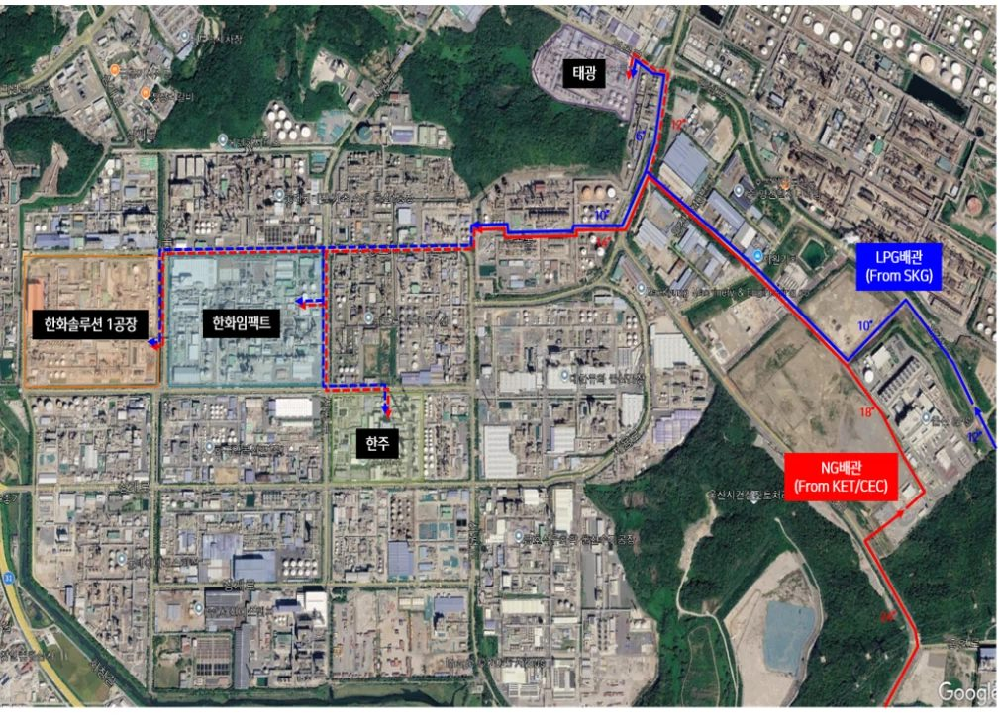
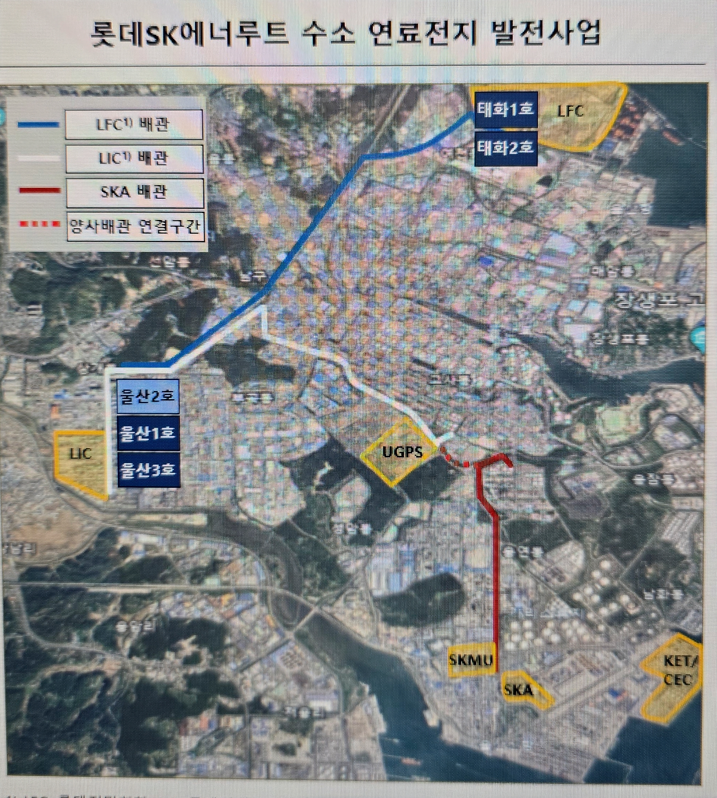
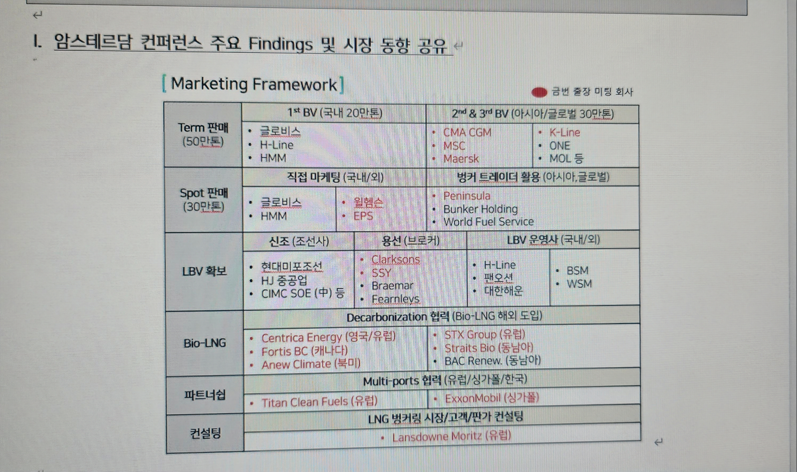
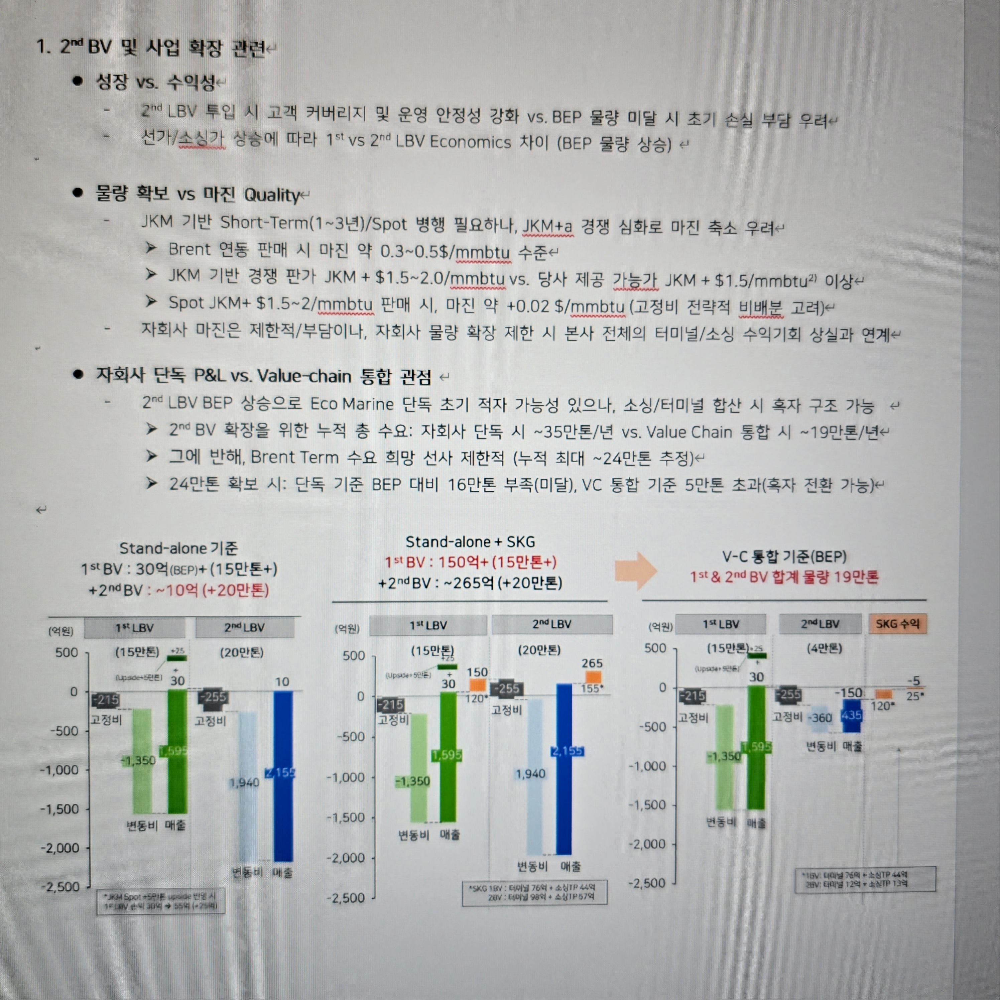
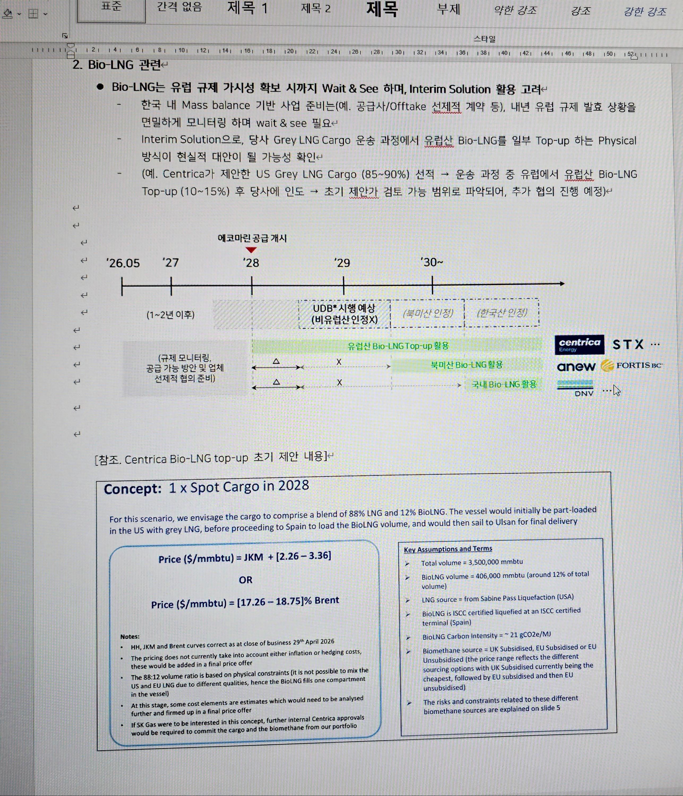

LNG 사업
'25년 사업 원년 · '31년까지 세전이익 9배 성장 목표 (143억 → 1,300억)
울산 KET·CEC 터미널 직접 보유 — LNG 도입·공급·Optionality Trading 전 밸류체인
| 소싱처 | 계약 물량 | 카고 | 계약 유형 | 공급 용도 · 해당 탱크 |
|---|---|---|---|---|
| M사 (Mitsui · 미쓰이) | 70만 톤/년 | Term 10카고 | 장기 계약 | GPS(UGPS) 발전용 100% — KET #1 탱크 전용 |
| W사 (Woodside Energy) | 55만 톤/년 | 8카고 | 장기 계약 | SKMU 4카고(≈28만톤) · 벙커링 3카고(≈21만톤) · 여분 1카고 — KET #2·#3 탱크 |
| ▶ Woodside 계약물량 '27년 하반기부터 공급 개시 예정 | ||||
| SPOT | 10~20만 톤/년 | 시황 따라 조절 | 현물 조달 | 시황 최적화, 재고 탄력 운용 |
| ※ 1카고 = 350만 MMBtu ≈ 6.75만톤(약 7만톤) · LNG 1톤 = 51.87 MMBtu (환산 시 약 50 MMBtu 적용) · 총 130만톤/년 조달 | ||||
SKE 사용량이 10만톤 늘었다고 해서 우리 수수료가 비례해서 증가하는 구조가 아님. 우리 터미널 수수료는 고객사가 임대한 탱크 저장공간(KL)을 기준으로 수취되며, 사용량(톤)↔용량(KL)의 환산 비율은 법적으로 정해진 기준이 존재함.
| 구분 | 연간 사용량(톤) | 법정 최소 필요 용량(KL) | 실제 임대 용량(KL) |
|---|---|---|---|
| 기존 ('25 이전) | 50만 톤 | 9.1만 KL | 10만 KL (여유분 약 0.9만 KL) |
| '26년부터 | 60만 톤 (+10만 톤) | 11만 KL | 11만 KL (1만 KL 추가 임대) |
· 기존엔 9.1만 KL만 확보하면 됐는데 10만 KL를 계약 → 그동안 약 0.9만 KL의 여분이 있었음
· SKE가 10만톤(50→60만) 추가 사용 → 법적으로 11만 KL 필요 → 우리 터미널에서 1만 KL 추가 임대
· 즉, "사용량 10만톤 증가 = 탱크저장공간 1만 KL 추가 + 12개월 × 10회전" 구조로 환산
· 우리 수수료 증가분 = 추가 임대 1만 KL × 임대단가로 산정, 사용량(톤) 증가분 자체와는 직접 연동되지 않음
| G&P 사업이익 | '26년 전망 | '27년 목표 | 전년비 |
|---|---|---|---|
| 사업이익 | 277억 | 961억 | +684억 |
- '27년 물량 Opt. 추가실행 및 3사 Opt. (4카고): 5월(4$), 6월(4.5$), 7월(5.1$), 3사(3.5$)**
*'27년 경영계획 취합 시점 기준, **net spread, $/mmbtu 기준
· M사 1카고 +208억 (사할린 카고 축소), W사 1카고 +153억 추가 실행
▸ (예시) 탱크 6만 KL 임대 시 — 구 고려아연 #2 검토안 기준
60,000 × 0.45 = 27,000톤 저장 → 연간 환산 시 27,000 × 12개월 = 32.4만톤/년
▸ SKE 연간 60만톤 사용
60만톤 ÷ 12개월 = 5만톤/월 → 50,000 ÷ 0.45 = 11.11만 KL
▸ SKE 연간 50만톤 사용 (기존)
50만톤 ÷ 12개월 = 4.16만톤/월 → 41,666 ÷ 0.45 = 9.25만 KL → 그래서 10만 KL 계약이었음
① 수소혼소 발전소 (300MW) — 수소·LNG 혼소 R&D, 점진적 수소 비중 확대 (청정수소 필수)
② 국산터빈 발전소 (900MW) — 두산 국산 터빈 R&D 수요 (글로벌 3사: GE·지멘스·미쓰비시 외 국산화)
③ 울산 석탄대체 LNG 발전소 (1GW) — 당진 석탄발전(6GW) 폐지에 대응한 대체 발전소
- SK가스는 '22년 동서발전 입찰에 단독 참여(KOGAS 미참여)하여 낙찰 → '22.12 TUA 체결 → '23년부터 4탱크 건설 착공
- ①+② 합계 1.2GW가 #4탱크용 본계약, ③번은 #5탱크 우선협상대상자 권리 확보
문재인 정부 신재생 전환으로 송전망 증설 백지화. 윤석열 정부 원전 재가동으로 송전망 부족 심화. "울산에 LNG 발전소 지어도 수도권 전기 전송 불가" → ③번 1GW를 용인반도체클러스터로 이전 → SK가스 #5탱크 우선협상권 소실
"LNG 안 돼, 수소 해" 기조로 ①·②번 발전소 인허가 지연 중. SK가스 4탱크는 '26.10월 COD 임박했으나 동서발전 발전소는 착공조차 못함
"신규 발전소 못 지으니 기존 노후 LNG 발전소를 임시 활용" — 발전 효율 낮음 반영해 사용량 감축
· 경제적 관점: 동서발전의 연도별 계약용량 감소분은 이자 수취로 만회 → 실질 손실 없음
· 회계 관점: '27~'29년 기간 발생비용으로 일시 손실 발생 (예: '27년 동서 매출 150억 vs #4Tank 매출원가 약 440억(감가비 230억 등))
· 연료구매: 11~12월 직수입 LNG 도입계획 → 입찰 준비 중 (당사 참여 예정)
· 정압소/배관: '26.12월 준공 예정, 건설 진행 중 (특이사항 없음)
| 대상 발전기 | 용량 | 시점 | 현황 |
|---|---|---|---|
| 울산 #1~3 복합 (노후 1.2GW, 직수입 전환) 연료 사용 10~20만톤/년 예상 |
6~10만 KL | '27 | ✅ 직수입 연료전환 준비 중 (직수입 전환 인허가 취득 완료). 발전효율 낮아 SPOT 소량 도입(1~2만톤/카고 편승) 방식 |
| 음성 #2 (신설) | 6만 KL | '28 | ⚠️ 송전망 구축 지연으로 개시시점 '30년으로 이연 |
| 그린 #1 복합 (신설) | 10만 KL | '30 | ⚠️ CHPS 제도변경(국내 수전해 수소 우대)으로 그린암모니아 활용 불가 → 착공 지연, 시점 불확실 |
| 울산 #5 복합 (신설) | 10만 KL | '31 | ✅ 정상 추진 중 (정부 예타 완료, 환평 인허가 中) |
| 울산 #4 복합 (노후 #1~3보다 이후 지어진 발전기, 직수입 전환) |
10만 KL | '33 | ✅ 정상 추진 중 (직도입 전환 검토 완료) |
· 그린 #1 복합: CHPS 제도변경으로 그린암모니아 활용 불가 (국내 수전해 수소 우대) → 착공 시점 불확실
· 동서의 추가 수요(음성#2, 그린#1)는 당사 #5·#6 탱크의 잠재수요로 적극 영입 모색 필요
① CHPS 청정수소 발전 (900MW) — '25.11~12월 전기위원회 조건부 승인. 단, 이재명 정부 출범 후 수소사업 부정적 → 사실상 무산
② 신울산 500MW — '25.11~12월 전기위원회 조건부 승인 ⇒ 현재 유일하게 확정적인 수요
※ 충주 500MW는 시의회·주민 반대로 무산 → 신울산으로 이전
음성·여수 500MW 발전소 공급용 환상망 이용 추진. '27 상반기 KOGAS-민간-제3업체 용역 완료 예정. '28년부터 민간사업자 할당 계획. 성공 시 100~150톤 추가 공급 가능(음성·여수·신울산 각 500MW).
'26년 말 KOGAS 계약 종료 후 동서발전 직도입 전환 추진. '26.6.4 산업부 사업계획서 제출. SK가스는 TUA + PUA(배관) + GUA(정압소) 패키지 계약 체결 중. 직도입자 등록증 발급 대기 중(대통령 보고로 일시 지연).
동서발전 노후 발전소 소량 수요(1~2만톤) 대응. SKGI가 UGPS·SKMU 물량(5만톤) + 동서발전(2만톤)을 묶어 7만톤 카고로 도입. SKGI 마진 추가 확보 구조. 연내 Spot Cargo 도입 협의 중.
암모니아 크래킹 방식이 정부 청정수소 요건 불충족 → 수전해(태양광·풍력 연계) 방식 공동 검토. 경제성·기술 미비로 단기 실현 난망. '26.6월 행정예고, 7월 입찰공고 대응 예정.
합의서상 동서발전이 발전소 인허가를 못 받더라도 SK가스는 '30~'34년에 걸쳐 이자 포함 이용료를 전액 회수 가능. 다만 '동서발전 소송 제기 리스크' 최소화를 위해 확정매출을 조기에 만들어내는 노력(환상망 연계, MSPA, 직도입 전환)을 병행 중. 신울산 500MW 외 수요는 여전히 불확실.
| 타깃 업체 | '26.1Q | '26.2Q | '26.3Q | '26.4Q | 현재 상태 | ||
|---|---|---|---|---|---|---|---|
| 고려아연 | Anchor | #2 열병합 LNG 공급 (구역전기) | ▲ 구역전기 인허가 지연 ▼ 자가발전 전환안 제시 → 인허가 시 HOA | 인허가 대기 | |||
| 한주 | #2 열병합 LNG 공급 (구역전기) | ▲ 전쟁·고유가로 연료구매 지연 ▼ LPG Option 반영 유도 | ▲ 개별요금제와 가격 경쟁 ▼ 입찰 대행·HH 상한 Formula | '27 입찰 대응 | |||
| LIC | 터미널 이전 제안 (보령T → KET) | ▲ 보령T 잔여계약·조성(C1) ▼ C3 대체 + 이중화 Package | '27.2Q 본계약 추진 | ||||
| LS MnM | 자가발전 | 가스엔진 자가발전 (70MW) | ▲ LMP로 자가발전 경제성 하락 ▼ 자가발전 유지 + 신규 보일러 직도입 추가 | F/S 진행 | |||
| 한화임팩트 | 가스엔진 자가발전 (10~30MW) | ▲ 기존 GT 활용 요구 ▼ NCC 가스터빈 활용 | ▲ LMP로 발전 경제성 하락 ▼ 히터 연료대체 제안 (직도입) | 연료대체 | 히터 연료대체 (조건부 등록 진행) | ||
| 유니드 | 가스엔진 자가발전 (10MW) | ▲ LMP로 발전 경제성 하락 ▼ LPG Bridge 제안 | ▲ 고객 우선과제 = 수소보일러 ▼ 수소보일러 LNG 겸용 | ||||
| 한화솔루션 | 자가발전 제안 | ▲ LMP로 발전 경제성 하락 ▼ 기존 LPG → LNG 연료전환 | 인허가 준비 중 (조건부 등록) | ||||
| 롯데케미칼 | LPG Bridge 제안 | ▲ 경동 Conflict 1호 사례 기피 ▼ 신설 히터 직도입 (PFO 대체) | 공동 검토 착수 | ||||
| 이수화학· 금호석화 | LPG Bridge 제안 | Bridge 적용 검토 진행 중 | |||||
'27년 상반기 투자 의사결정 확보 → Success Story로 타사 전파
※ 상세는 아래 "1호 사례 Deep-dive" 참조
· 경동 자체 직도입 LNG 활용사업(집단에너지·연료전지) 지원
· 수요처 신규투자 시 경동E&C(EPC·O&M) 활용 제안
※ 상세는 아래 "경동 Conflict → 협력 전환" 참조
· LIC/SKGC Pain point 해결
· LS MnM 등 신규투자 예상업체 계약 성사
· 도시가스 가격 급등 → 연료대체 Needs 증가 · 탄소배출권 가격 상승
· 보일러·히터는 발전기 대비 CAPEX가 낮음 (LNG 1만톤 기준 약 10~17% 수준)
· 정책자금·ESCO 활용 시 회수기간 2년 이내 → 자가발전(Pay-out 2~4년 요구, 10년+ Take-or-Pay 부담)과 달리 고객 투자 문턱이 낮음
| 고객사 | 현재 연료·설비 | 전환 방식 | 연간 물량 | 저장용량 | 진행 단계 | 공급 개시 |
|---|---|---|---|---|---|---|
| 한화솔루션 1호 사례 | LPG 설비(히터) | 보일러 연료대체 | 0.8만톤 | 0.2만kl | 경제성 확인 완료 · NDA 체결 | '29.1H |
| 롯데케미칼 1호 사례 | PFO · 도시가스(히터) | 신설 히터 직도입 + 필요시 일부 투자비 지원 | 3.0만톤 | 0.6만kl | 공동 검토 착수 | '29.2H |
| 유니드 | 도시가스(보일러) | LPG 연료전환(Bridge) → LNG 직도입 | 2.0만톤 | 0.4만kl | 예관공 Tapping 준비 중 | '29.2H |
| 한화임팩트 | LPG 설비(보일러) | LPG 설비의 직도입 LNG 전환 | 2.0만톤 | 0.4만kl | 천연가스 조건부 등록 진행 중 | '29.4Q |
| LS MnM | X (신규 보일러) | 신규 보일러 직도입 | 3.0만톤 | 0.6만kl | F/S 진행 중 | '29.4Q |
| 금호석화 | 도시가스(히터) | 도시가스 → LPG → LNG 단계 전환(Bridge) | 2.0만톤 | 0.4만kl | Bridge 적용 제안 | '30.1H |
| 이수화학 | 도시가스(히터) | 도시가스 → LPG → LNG 단계 전환(Bridge) | 2.0만톤 | 0.4만kl | Bridge 적용 제안 | '29.2H |
| 합계 (7개사) | ≈ 15만톤 | 3.0만kl | CEC #5 FID 근거 수요로 활용 (FID 미결 상태 유지) | |||
| 영역 | 성격 | 상황 |
|---|---|---|
| 도시가스 판매 | 경동 방어 영역 | 기존 물량 전환 시도 → 경동 반대 (예: 한주 보일러 건). 도시가스 미사용 설비에도 기득권 유지 입장. 계약 갱신 시 설비 명시·최소이용량으로 공급권 강화 |
| 배관 JV KD에코허브 (경동 60% · SKG 40%) |
상호 이익 | 규제상 수익률 보장되는 안정 사업 → 신규 수요향 배관은 경동도 적극적 |
보급률 포화, NDC 강화, 인구 감소, NG 발전 억제
제도상 진입 차단 불가
타 사업자는 BM 전환 또는 Exit 중
타 LPG 공급자의 울산 산업체 영업 통제 불가
| 모드 | 주요 내용 | 경동 Gain | SKG Gain |
|---|---|---|---|
| ① 직도입 인프라 O&M 플랫폼 (KDEH 확장) |
· 직도입 배관 설치·임대 (KDEH 통해 NG 배관 임대 중) · C3·C2·수소·스팀 동시 설치 (석화단지 → 용연단지) · LNG T/T · LPG T/L · 선박용사업자 취득 |
판매량과 무관한 임대·O&M 수익, 신규 이송사업 확보 | 배관 투자 부담 분산, 인허가 장벽 완화 |
| ② 분산특구 분산사업자 (울산미포) |
· LNG 직도입 기반 CHP·연료전지(FC) 발전 · 경동 계열사 또는 경동·SKG SPC 설립 · SKG 연료·인프라 / 경동 투자·운영 |
중앙·구역형 발전사업 진입 | 장기 LNG 연료 수요 확보 |
· 고객 전환: 설비 단위 경동 합의로 직도입 전환 동의 확보 → 한화솔루션·롯데케미칼 1호 사례 부담 해소
· 배관 인허가: KDEH 협업으로 공용배관 설치 및 울산시 협의 원활화
· 기존 도시가스 설비는 건드리지 않음
📂 '26년 Look-back (아카이브) — 3번의 Pivot · 자가발전 수요개발 추진 내역 폐기된 전략 · 참고용 ▼ 클릭하여 펼치기
| 단계 | 시기 | 전략 | 핵심 내용 | 막힌 이유 (제약) |
|---|---|---|---|---|
| ① | 1Q | 대형 발전수요 (#5 Tank Anchor) |
고려아연·한주·LIC·LS MnM 대상 발전사업 투자·터미널 이전 마케팅 | 구역전기 인허가 보류, 전쟁·고유가로 투자 지연 |
| ② | 2Q | 소형 자가발전 Package | 자가발전 Total Solution, 통합 인프라계약으로 계약 간소화, 석화·온산 30여 업체 Pipeline | 지역별 차등요금제로 자가발전 경제성 하락 (전기료 10~13원/kWh 인하 가능성, 10MW급 연 8~11억 편익 감소), 석화 침체·장기계약 부담 |
| ③ | 3Q | 연료대체 · LPG Bridge | 보일러·히터 연료대체 (롯데케미칼·한화솔루션 등), 도시가스 → LPG → LNG 전환 | 경동도시가스와의 Conflict |
| ④ | 4Q | 경동과의 Conflict | 경동 공급권·기득권 (계약 Lock-in), 조건부 등록 지연 (도시가스 사용 이력) | → '27년 경동 협력 구조 도출로 돌파 |
· 한주 — HH 연동 연료비 상한 Formula · 입찰 대행 제안
· LIC — 보령 유지 + KET 이중화 단계적 이전, C3 Package 제안
· LS MnM — 신규 보일러 → 자가발전 단계 공급, Pre-TUA 추진
· 투자·재무지원 — SKI·SKT ESCO, 탄소중립사업 보조금
· 계약 간소화 — Package 통합 인프라 계약, 1~4만톤/년 표준화 LNG SPA
· 인허가 지원 — 천연가스 수출입업 조건부 등록, 예관공 등록
① 지역별 차등요금제 → 자가발전 경제성 하락
② 석화 구조적 장기 침체 → 신규투자 여력 상실 (Pay-out 2~4년 요구, 10년+ Take-or-Pay 장기계약 Risk 인식)
③ 산업부 조건부 등록 지연, 석화단지 집단에너지사업법상 한주 동의 없이 열생산설비 신설 불가, 구역형 집단에너지 신규 인허가 보류
📜 당시 원문 보존 ('26.5~8월 작성 기준) — #5 Target 전략 · 업체별 상황 · HRSG 우회옵션 · 구 경동 이해관계 · 마케팅 퍼널 · 이용자 유치 경과표 · 한주 BM ▼
→ "도시가스 안쓴지 10년 됐으니 직도입 LNG 가능하지 않냐"고 산업부 탭핑. 승인 시 타 업체 확산 사례로 활용
② 보일러 (도시가스/LPG 사용) → 직도입 LNG 전환 추진 중, 그러나 경동도시가스가 반대하여 어려움
※ 우리 전략: "안 사면 너네 고객사에 직접 팔거야" 지렛대 병행 (하위 고객사 마진이 개별요금제 없어서 10~15% 더 높음)
→ 그러나 기후부가 "신규 LNG 구역전기 사업 불가" 입장으로 1년 넘게 표류
→ 구역전기 포기하고 자가발전만 하면 인허가 가능하나, 고려아연은 자회사 판매(구역전기) 매출을 원함
· Plan B: 자기전기 SAVE만 하거나 한전 역송도 검토 중
· CAPEX 부담: 5만KL 사용 시 약 1조원 투자 필요 → GPS의 1/3 용량. 회사 연이익 1.5조 대비 부담 큼
· 여수 YNCC 셧다운으로 노후 가스터빈 유휴 → 울산으로 이설 (한화 자산 최적화 목적, 우리는 LNG 판매 무관)
· SKT ESCO 활용 예정 (SKG 투자 부담 없음 - SKT 자본으로 EPC + 10년 상환 구조)
→ 산업부 승인 시 다른 사업자에게 "LPG로 먼저 대체 → LNG 자가발전 전환" 영업 스킴 확산
→ Plan A (최선): "HRSG는 열생산시설 아님" 해석을 기후부에서 받아내기 (외부 법무법인 자문 확보 → 기후부 의견제출·답변 대기 中)
→ Plan B (차선): 아래 3가지 우회옵션
| 구분 | HRSG | 열교환기 | 흡수식 냉동기 (칠러) |
|---|---|---|---|
| 만드는 것 | 스팀 (수증기) | 뜨거운 물/공정열 | 냉수 |
| 대체 수요 | 보일러 스팀 생산 | 공정별 히팅소스 | 냉방/냉각 (공장 냉수 다수 사용) |
| 효율 | 좋음 | 최고 (직접 전달) | 보통 (열→냉수 변환) |
| 난이도 | 표준화 (쉬움) | 공정별 엔지니어링 難 | 중간 |
| 범용성 | 스팀은 어디든 (범용) | 공정 전용 | 냉방 필요 공장만 |
| 규제 리스크 | ⚠️ 열생산시설로 걸릴 위험 | 상대적 자유 | 상대적 자유 |
· 신규 자가발전 수요: "우리가 만들 테니 배관은 KD에코허브가 깔자" → 경동 무위험 자산 증식, 우리는 LNG 판매 (Win-Win)
· 기존 도시가스 물량: "너희 배관에 우리 직도입 LNG 흘리자, 배관 비용은 지금 도시가스만큼 줄게" → 경동 거절 (Drop)
└ 추정 이유: 고객 관계를 SK로 영구 이전 · 업계 선례 우려 · 임대업 격하 거부 · 규제 복잡성
· 탱크로리 공급: "경동이 LNG 탱크로리로 공급 시도" 제안 → 초기 단계 (아직 초기, 지켜봐야 함)
· 경동 자체 니즈: 도시가스 사용량 감소 우려 → 직도입 LNG로 발전사업 검토 의향 有
| 업체 | kta | 만kl | 체결 | 개시 | 2Q 진행 현황 | 3Q 일정·추진 계획 | 지연 사유 |
|---|---|---|---|---|---|---|---|
| SKGC | 90 | 1.7 | - | - | • 천연가스 수출입업 조건부 등록 완료 • 연료전환 F/S 용역 진행 중 |
• F/S 상반기 완료 후 투자의사결정 • 투자 시, 본 TUA 체결 논의 재개 |
- |
| SKE 용량 추가 | 100 | 1.0 | '26.2Q | '26.10* | • '26.01 용량 증대 TUA 체결 품의 | • '26.06 내 용량 확정 및 본 TUA 체결 | - |
| (1) 고려아연 | 330 | 6.0 | '26.2H | '31.1H | • 전기위원회 인허가 확보 후 추가 논의 • 제2발전소 구역전기 인허가 지연, 제2발전소 기본설계 완료, 인허가 확보 시도 중 |
• (인허가 확보 시) LNG Package 공급 관련 논의 개시 | • 고려아연 자회사向 전력판매를 위해 구역전기사업자 인허가 필요 → 전기위원회 체류 중 |
| (2) 한주 | 190 | 3.5 | '27.1Q | '31.1H | • 기본설계 진행, 제2발전소 터빈 납기 지연 (LPG option 포함 기본 설계 진행 중) • 터빈 납기 일정에 맞춰 COD 지연 ('30.2H → '31.1H) |
• 보일러 수요 선공급을 통한 제2발전소 LNG 계약 조기 체결 방안 협의 | • 터빈 납기 추가 지연에 따른 COD 지연 ('31.1H) 및 최근 전쟁에 따른 수급 불안으로 LNG 구매 시기 연기 |
| (3) 롯데정밀 | 100 | 2.0 | '27.1Q | '31.1Q | • 그룹사 방침에 따라 투자 Holding 중 | • 500MW 구역전기 편입 논의 | - |
| (4) LS MnM | 120 | 2.1 | '26.4Q | '30.2H | • 연도별 예상 사용량 확인 후 인프라/LNG 가격 1차 제시 • 임원진간 미팅 통해 LNG 협력 공감대 형성 |
• '26년 말 투자 방향성 결정 예정으로 LNG 및 인프라의 Commercial 계약 협의 추진 | • 신규 자가발전 투자결정을 위한 내부 검토 중 (70MW) |
| (5) 유니드 | 40 | 1.0 | N/A | N/A | • 부지 부족 문제 일부 해소, 엔지니어링 F/S 검토 예정 • 직도입 LNG 이전 LPG 적용 가능성 검토 |
• 자가발전 F/S 진행 및 LNG 계약방안 협의 • LPG 공급방안 구체화 |
• 신규 자가발전 투자결정 내부 검토 중 (10~20MW) • 연료 대체 검토: NG → LPG → LNG 2만톤 |
| (6) SK PIC Global | 60 | 1.0 | N/A | N/A | • 석화 3사 통합운전 전략 등 고려 필요한 것으로 확인 | • 석화 3사 통합운전 과제 中, 직도입 LNG 사용 여부 F/up • 자가발전 또는 500MW 구역전기 편입 향후 논의 |
- |
| (7) 한화임팩트 | 40 | 0.7 | '26.2H | '29.1Q | • 산업부에 LPG 대체 직도입 LNG 사용 여부 협의 중 • 직도입 LNG 활용 위한 자가발전 검토 재추진 중 |
• 도시가스 → LPG → 직도입 LNG 공급 사례 검증 • 자가발전 투자검토 지원 |
• 신규 자가발전 투자결정 내부 검토 중 (10MW) • 연료 대체 검토: LPG → LNG 2만톤 |
| (8) 롯데이네오스 | 220 | 4.3 | '26.3Q | '27.12 | • 임원진간 미팅 통해 터미널 이전 공감대 형성 • LIC의 기존 이용료 대비 경쟁우위의 이용료 제시 |
• 터미널 이전 위한 본격 논의 재개 및 의사 결정 | • 공장 운영안정성상 일정한 메탄 함량 유지 선호 → 당사 #3 탱크 안정화 후 조성 검토 예정 |
| (9) 카프로 | 100 | 2.0 | '26.2H | '29.1H | • 수출입업 조건부 등록 서류 제출, 산업부 논의 중 | • 수소 판구매 관련 구체화 필요 • LIC향 수소 공급 설득을 통한 가동률 확보 |
- |
① SKG → 한주에 LNG 공급 시도
② 동시에 한주 이용 고객사에게 LNG 직도입+자가발전 설득
→ 한주가 빠지면: SKG는 LNG를 10~15% 더 비싸게 팔 수 있고, 유니드 같은 고객사는 전기료가 더 싸짐
"한주야, 우리꺼 안 사면 너네 고객사에 직접 팔거야~"
원래 한국석유공사(KNOC)는 울산에 오일터미널 사업만 하려 했으나, 사업성이 안 나와 2000년대 중반부터 10년 넘게 사업화를 못 한 상황이었습니다.
2017~2018년 SK가스가 석유공사에 제안: "우리랑 같이할래? 우리는 LNG사업을 하고 싶어. 근처에 GPS 지을 건데 LNG 탱크가 필요하거든" → 공동 진행 합의.
LNG 사업 진입에는 Minimum Scale 확보가 필수 조건. UGPS·SKMU Captive 수요만으로는 부족해, 고려아연·SKE를 탱크전용(매우 싸게) 계약으로 끌어들여 스케일을 맞췄고, 사업 개시는 했지만 그 과정에서 출혈이 발생했습니다.
주요 일정: JV 체결 '19년 → TUA·EPC 계약 '20년 → 착공 '20년 초 → #1·#2 상업운행 '24.10월 → #3 준공 '26.6월
전기료 20% 절감을 위해 300억~1조원 규모의 자가발전 설비에 투자해야 함. 본업(아연 채굴, 석화 등)에 투자하면 사업 Upside가 열리지만, 자가발전 설비투자는 단순 전기료 cost saving만 존재 — 고객사 입장에서 투자 우선순위가 낮음.
소유 → SK가스
Master TUA → 고객사
전대
※ 이용료 산정: 삼일회계법인 (공동발주, 5,000만원)
최초 청구 1,264억 → 44억 인정 → 잔여 1,220억 분쟁.
현재 합의+중재 혼합 방식, MAX 240억 CAP으로 진행 중.
#4부두 — OIL/LNG (운영 중)
#6부두 — 벙커링 전용
#1·#3·#5부두 — 미개발
LPG Coolant 선적(가스 트라이얼 서비스): 현대중공업 계약 체결, 1회당 약 1.3만불, 연 2~4회 예상 (연 5억 절감효과). 5월부터 진행 예정.
Spot 10~20만톤/년
CEC #4~5 건설 중
활용 페이퍼 포지션
UGPS 연료
Trading 실현익
LPG 사업 (EcoEnergy)
SK가스 핵심 현금 창출원 — 프로판·부탄 도입·도매 공급
FEI·MB·CP 3원 소싱 구조 · 도시가스 연동가 산업체 공급(TSP) · Hedge/Optionality 수익 창출
| Eco Energy 사업이익 | '26년 전망 | '27년 목표 | 전년비 |
|---|---|---|---|
| 사업이익 | 795억 | 2,115억 | +1,321억 |
• 구조적 증가 있으나, 수송체계 재편으로 비용 효율화/판매 증대 (C3 +2원, C4 +1.5원)
• 사내지급이자 +70억, 기지비용 +90억 (배부비율 변동 영향 55.5% → 44.7%)
• Y+2~3년 소싱 물량 대상 Optionality 이익 극대화 모색 (+100억)
• SK가스: 유가연동 파생상품으로 수익성 안정적 확보
• 석화사/산업체: 납사·도시가스 대비 LPG가 쌀 때 선택 → 원가 경쟁력↑
민수 충전소를 통해 공급
3원 소싱
GPS 700m 파이프
Autogas·PDH
Trading·G&P 협업
+ Optionality 이익
| 계약 Entity | 계약기간 | 구매 물량 | 구매 가격 | Remark |
|---|---|---|---|---|
| SKGI | 2015 ~ 2016 | 12카고/2년 | MB + 13.5cpg | SKGT의 '18~'22 계약 체결에 따라 '16년은 9cpg로 할인 |
| 2017 ~ 2019 | 1카고/월 | MB + 9cpg | SKGT의 '18~'22 계약 체결에 따라 '18년 8cpg, '19년 7cpg로 할인 | |
| SKGT | 2017 ~ 2018 | 28카고/2년 | MB + 9cpg | '18년 4월~12월 8cpg로 할인 |
| 2019 ~ 2022 | 3카고/월 | MB + 7cpg | - | |
| 2023 ~ 2026 | 3카고/월 | MB + 6cpg | - | |
| 2027 ~ 2030 | 5카고/월 ↑ | MB + 6cpg | '27년부터 월 3→5카고로 물량 상향 |
cpg 환산 참고: 예) MB + 13.5cpg = 갤런당 13.5센트 프리미엄 · 1cpg ≈ $5.2/톤 (프로판) · 프로판 1톤 = 521갤런 (부탄은 약 455갤런)
140만톤
이체가 = [CP+보험료(0.0094%)+운임+관세]×1.0043 + $8/ton
100만톤
MB+보험료+운임+관세 (M-2 MB 기준 월물 산정)
40만톤
Trading Margin $6/ton · 도시가스 연동가
납사대체
20만톤
FEI/MOPJ 상대가 90% 초반 · 구매 MB+Freight
'25 확인치 20만톤 (기존 40만톤 → 정정)
5만톤
4만톤
50만톤
· 직매 520만톤 — 석화사 430만톤, 산업체 80만톤, 열조용 10만톤
· 직매 160만톤 — 석화용 120만톤 (PDH 100 + 납사대체 20) + 산업체 40만톤
※ 참고: PDH는 '20년 180만톤 → '25년 100만톤으로 축소 (카프로·태광 중단, SKA·효성 감량)
| 구분 | 물량 | 구매 방식 | 판매 방식 |
|---|---|---|---|
| 민수 | 140만톤 |
· CP+RIM-$2 · 110만톤 (Term) · MB+운임 · 35만톤 (Term) |
· MP (Market Price) — 국내 시장가 연동 |
| 직매 (산업체) | 40만톤 |
· FEI · 20~30만톤 (Term) · MB 4카고 · 맥쿼리로부터 MB/Brent로 구매 |
· WACOG (Weighted Average Cost of Gas) — 매입 원가 가중평균 |
| 석화사 - PDH | 100만톤 | · MB+Freight · 100만톤 (Term) |
· CP+RIM-$2 · 50%± · MB+Freight · 50%± |
| 석화사 - NCC (납사대체) | 20만톤 |
· FEI/MOPJ 상대가 90% 초반 공급처: 대산 현대케미칼(24만톤 탱크로리), SKGC, 대한유화, LG화학(추진) |
- Notion(이학철 실장님): 산업용 36만톤 (EE기준), TSP 40만톤 (도시가스 연동가), 열조용 7만톤 (KOGAS JKM 대체 최근 판매) 등이 별도로 언급됨
- 사용자 텍스트: 산업체 40만톤 (직매) → 간이 분류 상 산업체+TSP+열조를 합쳐 표기한 것으로 추정
- Notion PDH 98만톤 vs 사용자 100만톤 — 소수점 반올림 차이로 100만톤 표기
- NCC 납사대체 20만톤 (25년 확인치) — 사용자·Notion 모두 일치. 기존 표의 40만톤은 정정 완료
② 옵셔널리티 (Tolerance ±10%) — 40만톤 미공급 옵션 확보 (연 5~6% 이익)
③ 오퍼레이션 극한 — 대산 현대케미칼 탱크로리 24만톤/년 (평택→대산 매일 15대)
🎯 소싱-판매-옵셔널리티 대응 — 미-이란 전쟁 종전 대응 ('26.7.2 EE본부 Action Plan) 소싱·판매·Opt. 타임라인 표 ▼ 클릭하여 펼치기
완료 228KT · 모니터링 258KT
CV 86.5% · +43원/kg
완료 60KT · 모니터링 120KT
대한유화 66KT + S-OIL 42KT
확정 60KT · 협의중 488KT
확정 8.4KT · 협의중 70KT
('27년 MB 26.4KT, 6개 카고)
R/O 롤오버 486KT ('27.4Q 246 + '28 240)
산업체 연동 · CV 86.5% · 유가 $73.6/bl · +43원/kg ✓
CV 87.6% · +45원/kg ✓ · R/O 246KT 中
CV 83.7% · +49원/kg ✓ · R/O 240KT 中 · 잔여 96KT 모니터링
JKM 급락($12~) 시 잔여 open 검토
JKM $15.09/mmbtu · 잔여 18KT 검토
전사 예상 ~20원/kg 수준
'28.4Q 계약 → '29~'31 delivery · 60KT (NV 89.2% · +20원/kg) ✓ · 잔여 120KT 모니터링
총 548KT (확정 60 · 협의 488)
'27년 전체
'27.4~9월
~30원/kg 협의중 · '27.9~10월
60KT (NV 87.6% · +25원/kg) ✓ · 잔여 180KT 모니터링 · '28년 전체
KOGAS·HP Plant·SKE·APTM (총 78.4KT)
+10원/kg · '26.4Q~'27.1Q
도시가스 연동 공급 · '26.8~9월 SKE / 9~12월 APTM
| 확보 물량 | 228KT / 목표 486KT |
| 기준 | CV +5% 기준 |
| 예상 이익 (現) | 105억원 (45원/kg) |
| 목표 달성 시 | 220억원 (486KT 기준) |
| 확보 물량 | 234KT / 목표 354KT |
| 내역 | SKGC 72KT + HDC 42KT@89% + 잔여 60KT@86% + '27.2Q R/O @86% |
| 기준 | NV +5% 기준 |
| 예상 이익 (現) | 90억원 (38원/kg) |
| 목표 달성 시 | 210억원 (354KT 기준) |
| 도시가스 연동판가 | 유가 WACOG | • KOGAS 유가연동 Term WACOG 지속 하락 – 高 Slope 계약 종료 → 低 Slope 대체/갱신 지속: ('22) 14.0% → ('26) 13.5% → ('30) 13.2% |
| LNG Spot | • KOGAS JKM 도입 비중 확대로 변동성 확대 : 비중 ('22) 16% → ('26) 33% → ('30) 27% | |
| 소싱 및 Optionality | • LPG 동고하저 구조 약화 및 CV 변동폭 축소 – 중국 석화 수요 확대로 동·하절기 차이 축소: CV 변동폭 ('22) 10% → ('26) 5% | |
| 판매/계약 | • 판매마진 축소 압력 증대 및 수요 확대 정체 – 산업 경기 악화로 고객 공장 가동률 하락 / 재계약 도래 시 가격 인하 요구 증대 – 울산 내 연료전환 기회 감소 – 미수금 정산단가 감소 ('22) 34원/kg → ('26) 12원/kg | |
– 경제성 ('21) 146원/kg → ('23) 244원/kg → ('25) 71원/kg
– ('22) $25.3, ('25) $14.3, ('26) $10.5, ('27) $9.4
– 일부 미공급 옵션(36KT) 및 협의가능 조항(113KT) 확보
• JKM 수준이 경제성 확보의 핵심변수 ($1/mmbtu 당, 現 20원/kg)
| JKM | '21 | '22~'23 | '25 | '26 | '27 | '29~'30 |
|---|---|---|---|---|---|---|
| 비중 | 13% | 17% | 20% | 33% | 37% | 27% |
| 가격* | $16 | $25 | $13 | $18 | $17 | $9 |
| 민감도 | 7원/$ | 10원/$ | 13원/$ | 20원/$ | 23원/$ | 17원/$ |
(LPG 소싱 가정) CV 88% 공통, Slope '21 14.3% / '30 13.2%, JKM 비중 '21 13% / '30 27%, 정산단가 '21 20원/kg / '30 0원/kg · (민감도) Slope 0.1%당 3원/kg, 유가 $1당 5원/kg, JKM $1당 ('21) 7원/kg ~ ('30) 17원/kg
– 기존 하절기 보다, 시황 급변 시 소싱 진행 ('26년물 11월 소싱 완료)
– JKM $8 이하 시 소싱 경제성 확보 제한 (유가 $72 이하)
*기존 '26년 소싱 경제성 20원/kg 수준 ('26.1 JKM $9대)
– Opt. 이후 공급 위한 재소싱 Risk 증가
– 소싱 Window 확보 및 JKM 하락 방어 가능한 규모로 물량/기간 축소: 2년 기간 이상 단위로 소싱 및 JKM Hedge 운영
– 기존 수요처 중 대규모/장기 계약 및 P/L 공급 가능 고객 대상
– 도시가스 대비 상시 경쟁력 확보 및 LNG-LPG Opt. 이익 창출 가능
– 연도 별 재계약 물량 분산 (~10만톤/연, 계열사 제외)
– 재계약 시 미공급 옵션 실질 행사 가능한 Penalty 조항 반영 (협의 시 Penalty 미제공, 미협의 시 Penalty 제공/공급중단)
– Risk Case에 대한 대응 프로토콜 형식지화 및 실행
Compact
모델
• Y+2~3 소싱 / JKM Hedge
• 재계약 도래 시 미공급 옵션 반영
(도시가스 Gap 9% Penalty 기준 ~115억원/연¹⁾)
• 예상 매총이익: 210억원/연²⁾
LNG Dual
모델 전환
• 직도입 LNG 또는 LPG Dual 공급 구조
• 예상 매총이익: 100억원/연³⁾ (SKGI 이익 포함)
| 수요처 | 공급방식 | 물량¹⁾ (KT/연) | 직도입 Dual 전환 가능 | 미공급 옵션, 물량협의 조항 |
|---|---|---|---|---|
| 태광산업#3 | P/L | 34.5 | 우선 추진 | |
| 한주 | T/L | 32.2 | 미공급 옵션+Penalty | |
| 한화솔루션#1 | T/L | 16.2 | ||
| 한화임팩트 | T/L | 16.1 | ||
| 용산화학 | T/L | 5.0 | 대상 제외 | |
| 이수화학 | T/L | 17.5 | *후순위 추진 (원거리 고려) | 물량협의 |
| *UAC | P/L | 42.0 | 물량협의 | |
| *SKPIC | P/L | 54.0 | 물량협의 | |
| SK피유코어 | P/L | 140톤 | 물량협의 | |
| 고려아연 | T/L | 7.7 | ||
| 송원산업 | T/L | 5.4 | ||
| 피알테크 | T/L | 1.8 | ||
| 태광산업#1 | P/L | 14.8 | ||
| SK케미칼 | P/L | 6.0 | ||
| SK에코프라임 | T/L | 5.2 | ||
| 한화솔루션#3 | T/L | 9.5 | ||
| SKA | P/L | 3.0 | ||
| 경남금속 | T/L | 3.8 | 대상 제외 (울산 외 지역) | 미공급 옵션+Penalty |
| 대원화성 | T/L | 2.5 | ||
| KCC 대죽#1 | T/L | 26.0 | ||
| SKIPC | T/L | 20.0 | ||
| 해담토 | T/L | 1.0 | ||
| 화인베스틸 | T/L | 7.4 | ||
| 세아베스틸 | T/L | 4.0 | ||
| 롯데케미칼 | T/L | 9.6 | ||
| 효성티앤씨 | T/L | 7.0 | ||
| 효성화학 | T/L | 0.9 | ||
| 합계 | 353KT | Dual 가능 99KT | 미공급 옵션 36KT 물량협의 113KT | |

– 4개사, 99KT: 태광산업#3 (34.5KT), 한주 (32.2KT), 한화솔루션#1 (16.2KT), 한화임팩트 (16.1KT)
| Discussion Agenda | 세부 내용 |
|---|---|
1LPG 연동가 모델의 최적 소싱 및 판매 규모는? (고려요소) JKM Hedge 가능 물량 (파생손 여력), 중장기 MB 및 FEI 소싱 물량, 직도입 LNG Dual 전환 가능 물량 등 |
• (안) 30만톤/연 x 2년 – 파생상품 변동성: JKM Hedge 2년간 16만톤 (연간 30만톤, 비중 27% 수준) – 소싱 Risk 축소 효과: MB 중장기 소싱 (4카고/연 x 4년) + FEI 소싱 (12만톤/연) 기준 • (수익력) 기존 대비 수익력 감소하나, 안정적 확보 가능. LNG Dual 전환으로 Makeup 추진 → JKM 16만톤 Hedge 시 파생손 감내 가능 여부 ($5/mmbtu = 545억원¹⁾) |
2직도입 LNG Dual 모델 전환 대상 및 Milestone은? (고려요소) 우선 추진 대상 및 도입 제약/소요 기간, LNG 직도입을 위한 Minimum 물량 등 |
• (추진 대상) 기존 수요처 중 대규모/장기 계약 및 P/L 공급 가능 고객 대상 – 직도입 가능 신규 설비 보유: 태광산업#3 (34.5KT), 한주 (32.2KT) – 연료전환 5년 도과: 한화솔루션#1 (16.2KT), 한화임팩트 (16.1KT) • (Milestone) JKM 하락 가능성 ($10 미만) 고려, '29년부터 조기 전환 필요 → 직도입 LNG 소싱 및 공급 Process 진행 고려 시 도입 제약 및 적정 공급 시점 → 경제성 확보 위한 Minimum 물량 (수요처 별 시기 조율/Bundle화, LPG 마중물 조정) |
3기존 모델의 유연성 증대 방안은? (고려요소) JKM Hedge 가능 물량 (파생손 여력) 등 |
• (소싱 Period 확장) Y+3 ~50% 사전 소싱 (R/O 활용) – Y+1~Y+2 100% 및 추가 Y+3 50% 기준, 총 20만톤 JKM Hedge 필요²⁾ → JKM 추가 4만톤 (총 20만톤) Hedge시 파생손 감내 가능 여부 ($5/mmbtu = 680억원¹⁾) |
[Small DCC포럼(26.07.09)_Optionality 개념 이해, 박재범 팀장님]
-
Hedge는 도입가격과 판매가격 Index가 상이한 경우에는 헷지가 필수적임.
-
실물가격이 움직이는 것을 파생상품으로 헷지하게 됨. 실물가격과 같은 index의 파생상품으로 헷지를 진행하고, 파생상품을 그냥 paper라고 부름. 파생상품 거래하는 사람들이 얼마에 살수있고, 물량은 어느 정도 조달 가능한지 권리와 의무가 기재된 paper라고 해서 이렇게 부르게 된 것임
-
Floating 하는 실물 가격과 우리가 미리 거래한 페이퍼 간에 서로 반대 포지션이 형성되면서 변동성을 상쇄 시켜버림 → 마진 fix
-
Q. 여러가지 LPG 인덱스가 존재하는데(MB, CP, FEI 등) Hedge할 때 FEI(동아시아 도착도가격)를 주로 쓰는 이유는?
FEI는 앞에 MB나 CP 같은 LPG 가격에 뒤에 Freight나 터미널 fee 등 부대비용을 더한 비용임. 무슨말이냐면 MB나 CP는 파생상품을 헷지하기 어려운 요소들이 존재함. CP나 MB를 헷지하더라도 Freight라던지, 각종 부대비가 열려있다는 이야기임. -
그런데 만약 도착도인 FEI를 기준으로 파생상품을 활용하게 되면 완벽하게 Hedge를 할 수 있어서 통상적으로 FEI를 기준으로 파생상품 플레이를 하게 됨
Q. LPG의 파생상품, 페이퍼는 어디서 어떻게 거래가 될까?
- 원유나 LNG는 시장이 크게 형성된 Commodity임. 그런데 LPG는 유동성이 높지 않아서 장외에서 broker를 통한 거래를 진행하게 됨
- Q. 에코에너지 사업에서 Hege라는 개념이 언제 왜 시작되었는가?
- 기존에 도시가스를 쓰는 산업체 수요들이 있음. 셰일 혁명으로 인해서 LPG의 가격경쟁력이 생기게 되었고, sk가스가 도시가스 쓰는 산업체에가서 “도시가스 대신 LPG 쓰자. LPG 더 저렴하게 줄테니까 이거 써봐봐” 라면서 시작이됨. 도시가스보다 가격경쟁력 가진 lpg를 제공해주는거.
→ (Index 미스매치의 발생) 이러다 보니까 판가는 도시가스 연동해서 팔게 됨 ‘도시가스가격대비 9X% 판매, 그런데 원가는 FEI가 되는 Index 미스매치 상황이 발생하게 된 것 - 이러면서 hedge에 대한 필요성이 생겨남
[도시가스 연동가 판매]
-
원가: FEI
-
판가: 도시가스연동가(=한국가스공사가 도입한 LNG 가격 + 공급가격)
*LNG가격 Formula = Brent(원유) 55% + HH(미국LNG) 10% + JKM(동아시아LNG) 35% -
헷지를 잘하기 위해서 필요한 2가지는 아래와 같음
① 도시가스 가격 추정이 정말 중요함. KOGAS 판가 포뮬러를 알아야 제대로 hedge를 할 수 있음
② 판가를 알게되면 KOGAS 판가 대비해서 경쟁력 있게 LPG를 시장에서 소싱해 오는 것이 매우 중요 -
도시가스 가격은 ‘KOGAS 도매요금+ 각 권역별 소매공급비’ 더해서 결정
그 중 KOGAS의 LNG 도입가격이 압도적으로 중요한 factor임. 비중도 높고 가변성도 높기 때문임. 그래서 EE본부는 KOGAS의 도매요금(=즉, LNG도입가)을 추정하기 위한 여러가지 방법을 활용하고 있음. -
보통 가스공사는 장기 term 계약(10~20년간)이 15~20개 정도 있음. 나머지는 그때 그때 시장에서 사는 LNG로 구성되어 있음
-
그래서 우리는 Term 가격에 대한 조건을 대부분 파악하고 있음. 리서치도 하고 글로벌에 유명 에너지 기관 통해서 정보들을 얻게 됨. 가스공사 대부분의 계약을 알고 있음. 계약 당시에 예상되는 LNG, 원유 가격을 알아서 이것들을 조합하면 어느 정도 가스공사의 LNG 도입가를 추정할 수 있게 됨. 그래서 판가를 정밀하게 추정할 수 있게 됨
-
정산 단가와 공급비도 추정하고 있음
-
가스공사는 공사여서 그들의 원가를 그대로 국민에게 전가할 수 없음. 그래서 판가에 다 전가하지 못하고 미수금이 발생하게 됨. 그래서 미수금에 따른 향후 정산단가를 나중에 어떻게 반영할지도 중요한 부분인데 이런 부분도 우리 회사가 로직을 개발해서 정밀하게 추정하고 있음
-
도입부대비와 공급비도 나름의 로직을 가지고 추정하고 있음
-
가스공사의 매월 도매요금을 발표해주는데, 우리는 이 발표가 나기 전에 3, 4년뒤까지 가격까지 추정하고 있음. 현재는 2030년가격까지 추정을 하고 있음
-
Q. 판가는 이렇게 추정하면 그럼 원가는 어떻게 소싱할까?
-
우리한테는 상대가가 중요함. LPG가격과 원유의 오늘의 가격도 중요하지만
-
결국 LPG가격이 유가 대비해서 상대적으로 얼마나 경쟁력이 있는가가 중요함!!!!(FEI로사서 유가 연동된 도시가스 가격으로 팔기 때문)
-
lng 대비 lpg의 상대가, 납사대비 lpg의 상대가 경쟁력이 중요함.
-
데일리로 인덱스가 바뀜에 따라 우리의 소싱 경제성이 어떻게 달라지는 지 아침마다 보고 있음
Q. 그럼 실제로 소싱은 언제, 어떻게 진행할까?(상대가의 Range를 보면서 결정)
- CV상대가(=FEI/Brent)가 낮아지면 우리한테 유리한거임
→ Brent(도시가스 연동 판가)가 높아지고 FEI(원가)가 낮아진다는 뜻이니까
그래서 상대가가 약세를 보일 때마다 소싱을 진행하게 됨 - 그래서 그래프가 훅 떨어졌을때 소싱을 하고, 반대로 이게 오르면 옵셔널리티를 하게됨
- MOPJ는 석유화학용 원료임. 우리는 석유화학 원료로도 LPG를 공급함. 그래서 납사대비 LPG가 얼마나 싸고 비싼지도 매일 모니터링함. 이것 역시 상대가 그래프가 약세일 때 소싱하고 높을 때 옵셔널리티를 진행함
- → Hedge를 하기 위한 기반 핵심 조건. 1) 도시가스에 대한 정밀한 추정, 2) 미리 소싱을 잘하는 것
[Hedge에 대한 본격 컨셉]
-
원가: FEI(LPG가격)
-
판가: 도시가스연동가(=한국가스공사가 도입한 LNG 가격 + 공급가격)
*LNG가격 Formula = Brent(원유) 55% + HH(미국LNG) 10% + JKM(동아시아LNG) 35% -
실물 LPG를 배로 수입시켜서, 배관 통해서 도시가스로 파는구조임. Paper도 마찬가지로 진행됨
-
Paper: FEI Buy(LPG페이퍼를 사고)/ brent, HH, JKM Sell(원유, LNG 페이퍼 Sell을 걸게됨)
-
KOGAS의 Index별 비중, 가격에 맞게 페이퍼를 똑같이 사게 됨
-
과거에는 KOGAS 포트폴리오 중에 원유와 연결된 포지션이 많아서 우리가 Brent위주로 paper hedge를 많이했는데, 최근에는 LNG 비중이 높아지면서 KOGAS 포트폴리오도 변화하면서 JKM이나 HH의 Paper Hedge도 적극적으로 진행하고 있음
→ 지금은 KOGAS 모든 포트폴리오에 대한 Hedge를 진행중임 -
실물은 매일매일 가격이 달라짐. Brent(=도시가스가격이라고 치환해서 보면됨) LPG가격도 맨날 바뀜. 가격이 날마다 변동하는 사업 리스크가 존재함.
-
만약에 우리가 LPG Buy $550 페이퍼를 사면, 나중에 LPG 가격이 $200으로 떨어지든 $900으로 오르던간에 우리는 무조건 550불에 살 수 있게 된 것임
-
판매도 마찬가지임. Brent를 $70에 팔수 있는 권리를 사면, 나중에 brent가격이 10불이되던 100불이되던 70불에 팔 수 있는 권한이 생기게 되는 것임. 실물은 여전히 춤을 추겠지만 이렇게 되면 buy와 sell paper는 헷지가 되는 것임
Q. Buy, Sell Paper를 잡는 시점은?
- fei, brent 고정하는 시점은 동시에 함. 왜냐하면 하루하루의 상대가가 중요하기 때문임. 우리가 보통 페이퍼를 잡을 때는 이 정도 상대가면 좋겠다 하고 들어가는건데 시점 차이가 발생하면 우리가 생각했던 상대가가 변할 수 있기 때문에 동시에 buy, sell을 고정하게 됨
- 그리고 시차가 발생하면 그 시차 동안은 speculation이 되는 거임
[파생상품 평가손실, 평가이익]
-
평가이익: 우리가 가진 Sell paper가격 > 현재 시장거래가격 // Buy paper 가격 < 현재시장조달원가
-
평가손실: 우리가 가진 Sell paper가격 < 현재 시장거래가격// Buy paper 가격 > 현재시장조달원가
-
ex) $550 FEI Buy로 사뒀는데 현재 FEI 시장가격 $700불일 경우, 우리는 시가보다 싸게 살 수 있으니까 평가이익이 발생하는구조
ex) $550 FEI Buy로 사뒀는데 현재 시장가가 $400일 경우, 우리는 시장에서는 400만 주면 살 수 있는데 울며겨자먹기로 550불에 사야하니까 평가손실이 발생하게 됨 -
즉 정리해서 이야기하면, 우리가 공급해야 하는 월에 실물 LPG가격이 굉장히 올랐을 때 hedge를 해놓지 않았다면 굉장히 비싸게 사야하는 경우가 발생함. 그래서 실물은 비싸게 사야함. 하지만 우리가 paper를 가지고 있다면 paper가 이익이 발생하면서 그 손해를 상쇄해주는 효과가 발생하는 것임. 마진은 fix되는 구조라는 뜻
[Optionality Workflow]
- (도시가스 판매가 추정)먼저 도시가스 가격을 정밀하게 추정하고
- (수요확보)추정된 가격가지고 영업 진행 “저희가 도시가스 가격보다 5%정도 싼 가격에 싸게 드릴게요” 하고 고객사에 연동 판매
- (LPG 사전 도입) 연동 판매 계약가보다 더 싼가격에 상대가 소싱을 하는 것이 중요함.
페이퍼를 소싱해두고, 실물은 floating하니까 두 개가 만나서 마진은 fix되는 것임.
→ 만일 우리가 paper만 가지고 있었거나, 실물만 가지고 있었다면 요동칠텐데 우리는 2개를 다 보유하고 있기 때문에 2개의 손익이 상쇄되면서 우리가 계획한 margin으로 fix되는 구조인 것임. - (공급옵션 vs 미공급+Unwind 옵셔널리티 옵션 비교해서 의사결정)우리가 잡아둔 상대가 value를 가지고 있다가 기회를 보게됨
ex) 상대가 85%에 잡아뒀는데, 갑자기 시장에서 상대가가 95%로 뛰면 주식처럼 비싸게 팔아서 이익을 먹게됨. 이걸 옵셔널리티 이익이라고 함. 그리고 가지고 있던 포지션을 풀어서 확정해버리는 것을 unwind라고 하는거임.
→ 그래서 ‘공급option(공급마진먹는 구조)’ VS ‘Hedge한걸 옵셔널리티해서 unwind 이익을 먹을래’를 결정하게 되는 거임 - (Unwind했기 때문에 다시 Paper 잡기)그리고 만약에 공급까지 잔여 기간이 더 남았다면 Unwind한 물량을 시장에서 다시 기회보다가 공급옵션 대비 싼 가격에 다시 들어가는 구조
- (다시 Paper 잡았다가 공급해서 공급이익까지 챙기는 경우도 존재함)
Hedge 해둔 것을 비싸게 팔아서 unwind해서 옵셔널리티 이익을 얻는다고 보면됨
[Optionality의 4대 요소(제품/가격/기간/물량)]
-
옵셔널리티는 ‘제품/가격/물량/기간’의 옵션을 활용한 최적 이익 창출 모델
-
①제품: 옵셔널리티를 하기 위해서는 LPG/ 원유/ LNG, 납사의 제품을 가지고 저글링을 할 수 있음
-
②가격: 옵셔널리티에서는 가격을 싸게 잘 잡는게 엄청 중요함 그래야 가격 튈 때 마진 크게 먹을 수 있어서
-
③물량: 물량이 커야 또 옵셔널리티 수익 많이 창출할 수 있고
-
④기간: 기존에는 근월물, Spot 위주로만 하다가 이제는 2~3년 이후 물량까지 하면서 더 많은 옵셔널리티 기회를 노리고 있음
→ 위 4가지 요소를 잘 활용해서 이익 창출 최적화를 진행하고 있음 -
공급 기반으로 옵셔널리티를 진행해야 함!!!(매우 중요함) 왜냐면 아래와 같은 사례가 발생할 수 있기 때문임
ex) 우리가 상대가를 85%로 잡아뒀는데, 옵셔널리티 하고 싶은데 시장이 계속 80~85%에서 왔다갔다하는 옵셔널리티를 실행하기 애매한 시장이 지속됨. 그럼 손실 입을 수 밖에 없는데 이 때 bottom을 막아주는 옵션이 바로 ‘공급 옵션’ 임. -
공급옵션은 kg당 +20원, +38원 등으로 마진을 fix해두었기 때문임
-
가만히 두고 옵셔널리티를 하지 않고 있다가 고객사에 공급을 하면 위에 약정한 마진을 먹는 구조가 되는 것임
-
즉, 옵셔널리티는 공급옵션보다 더 크게 먹을 수 있겠다는 확신이 들 때 사용하는 카드인 것
-
그러니까 공급기반이 되어야 하방은 막으면서, 옵셔널리티 수익이라는 upside 수익도 창출할 수 있게 되는 것임
-
공급기반의 Hedge가 중요함. 공급이 없으면 speculation임
-
그런데 고객사 입장에서는 괜찮을까?
-
고객사랑 계약을 했는데 SK가스가 물건을 못 준대요. 그때는 도시가스 다른 연료로 대체해서 써야함. 그래야 Plant가 계속 돌아가기 때문. 대체재 공급이 용이한 것을 활용해야 함. 만약 고객사가 대체재가 없는 상황이면 공급을 해줘야하니까 옵셔널리티가 어려움
-
(미공급 옵션) 산업체 대상으로 “저희가 LPG를 도시가스대비 92%정도에 싸게 드릴게요. 근데 나중에 우리가 어 죄송한데 저희가 파생상품거래를 해야해서 못 드릴거같아요. 도시가스 쓰세요. 대신에 손해보는 부분은 보상해드릴게요”라는 Concept으로 시작했음.
-
‘20년도부터 이런 컨셉으로 시작함
-
공급마진 < 파생상품 처분을 통한 이익 일 경우에 옵셔널리티 실행
-
그리고 현재는 미공급 옵션 뿐만 아니라 옵셔널리티 범위가 넓어져서 어떻게 옵션이 진화하고 있음
-
지금은 제품/가격/물량/기간이라는 Optionality 요소들을 어떻게 극대화 하고 있을까?
① 제품의 다각화: 원래 lpg 연료용 공급 물량만 하다가, 연료용 뿐만 아니라 석화사의 원료용 물량도하고, LNG도 하고 있음
② 물량의 Size 증대: 과거에는 산업체 1개의 물량만 가지고 옵셔널리티를 진행했지만, 지금은 산업체 전체의 1년짜리 물량을 가지고 옵셔널리티를 진행함. TSP산업체가 지금 약 30여개 되는데 이 물량을 묶은 전체 물량 대상으로 옵셔널리티 진행함. 그리고 석화사 물량도 그냥 1년짜리 Term 물량을 다 옵셔널리티 진행해서 물량이 굉장히 많이 늘었음
③ 기간의 확대: (As-was) 당년, y+1년 물량 대상 옵셔널리티 → (As-Is) 당년, y+1, y+2, y+3년 물량으로 확대
→보통은 원원물(y+2, y+3년짜리 물량)로 갈수록 backwardation이여서 더 가격이 싸짐. 그래서 상대가를 더 낮은 value를 미리 사두니까 옵셔널리티 수익이 더 극대화 될 수 있게 됨 -
그래서 원월물을 활용한 기간과 가격측면에서의 옵셔널리티 확대도 진행되고 있음
[옵셔널리티의 실행 범위]
- EE의 밸류체인을 간단하게 그린거. 민수용, 정유사도 있지만 지금 옵셔널리티 대상 물량은 석유화학사(납사대체 물량만)와 산업체 용 물량만 옵셔널리티 대상임. 석화사 중에서도 PDH(ex. SKA 등)는 back to back 거래(구매와 판매 Index가 똑같아서 일정 마진을 붙혀서 파는구조라는 뜻)라 옵셔널리티 대상은 아니고, 납사대체 물량만 옵셔널리티 대상물량임.
Q. 왜 민수용은 옵셔널리티 대상이 아닐까? 물량도 큰데, Back to Back 거래여서 리스크가 존재하는 건 아니지만, 그래도 동일 Index로 Sell 잡아뒀다가 공급하기 전에 더 비싸게 팔 수 있는 기회가 오면 옵셔널리티 하면 안되나?????? → 어 생각해보니까 안될 거 같음. 왜냐면 옵셔널리티 할 때 대체재가 존재하는게 결국 중요하다고 했잖아… 근데 갑자기 SKA에 LPG공급 못하겠다 우리 파생상품 Play해야되서… 라고 하면 안되니까 PDH물량은 옵셔널리티를 할 수 없나보다.
민수용도 마찬가지겠지? 민수용도 대체재가 없으니까
[상대가 Index]
-
산업체: FEI/Brent(LPG를 사서, 원유 연동 도시가스가로 파는 것을 가정한 것)를 제일 많이 사용
MB/Brent → MB는 shipping cost때문에 완벽한 헷지가 어렵지만 그래도 중장기 공급안정성 때문에 MB를 소싱하기도함. MB는 FEI랑 다른 성질, 다른 기대감 때문에 우리가 소싱을 진행함.
JKM, HH도 도시가스 구성요소 중 하나로 최근 옵셔널리티 대상으로 활발하게 진행하고 있음 -
FEI/MOPJ(납사대체 원료 공급용 LPG)도 상대가로 샀다가 옵셔널리티로 많이 하고 있음
-
우리가 연료전지나, 자가발전 같은 작은 발전사를 대상으로 Dual Fuel 연료공급을 진행하고 있음.
LPG도 넣고 도시가스도 넣음. 도시가스사와 협업해서 내가 만약에 공급을 못하는 상황이면 도시가스사 너희가 대신 공급을 해줘라는 컨셉으로 받는 것임.
이 때 만약 LPG 가격 파생상품이 많이 올라가서 옵셔널리티 이익을 많이 먹을 수 있겠다하면 이때는 옵셔널리티를 하고 도시가스를 대체공급하는게 있음.
[Optionality 전형적인 Concept]
- 옵셔널리티 초기에는 특정 산업체를 대상으로 옵셔널리티를 진행했음
- 특정 산업체에게 “SK가스가 LPG 실물 공급해드릴게요” 하면서 기반 수요 확보
- 그 뒤, LPG 페이퍼로 마진 픽스 해두고
- 그러다가 LPG 상대가격이 상승하면 Unwind 이익을 취하고, 도시가스사한테 산업체에게 연료 대신 공급해 달라고 함.
- 만일, 상대가가 하락하면 옵셔널리티하면 손해를 보는 상황이기 때문에, 미리 fix한 마진으로 산업체에게 공급함
[Optionality Concept의 확장]
-
산업체는 특정 산업체 물량을 가지고도 하지만, 내년 물량을 가지고 옵셔널리티를 진행하는 형태로 변함
-
내년에 공급할 30개업체 물량 미리사서 옵셔널리티하고, 다시사서 공급하게됨. 내년 물량 미리샀다가 상대가 높을 때 풀어서 옵셔널리티차익먹고, 다시 잡아서 또 공급이익을 또 먹는 형태
-
y+1 물량만 진행하다 보니, ‘이럴 거면 그냥 y+2, y+3년치 물량까지 진행해보자’라고해서 원월물을 대상으로 동일 컨셉으로 진행중임
-
원월물은 소싱할 수 있는 상대가 value를 더 낮게 가져갈 수 있음(기본적으로 Backwardation 시장을 가정하므로)
-
원월물은 optionality play하기 훨씬 용이함. 왜냐면 시간적인 여유가 있기 때문에 상대가 낮을때 잡았다가 상대가 올라가면 unwind하고, 다시 또 기회가오면 잡고 하면됨. 공급 Deadline이 2년, 3년 뒤니까 훨씬 여유가 있어서 옵셔널리티에 활용하기 더 좋음
-
LNG 판가 Paper도 미리 사뒀다가 팔고 다시 Hedge 하는 play도 하고 있음
-
그리고 lpg-도시가스를 dual fuel로 공급하는 소형발전소 스위칭 모델도 있음
-
산업체도 FEI/Brent냐 FEI/MOPJ만 다르고 똑같은 컨셉으로 진행하고 있음
-
언제부터 Hedge와 옵셔널리티를 진행했냐?
-
Hedge는 14년도부터 진행했고, Optionality를 본격적으로 시작한 것은 ‘20년도 부터임
-
그 때부터 산업체 미공급 옵션을 계약서에 반영해서 옵셔널리티 시작했음.
-
그 이후에는 물량, 상품, 기간 다각화를 꾀했고 24년도 25년도가 거의 옵셔널리티 성숙도가 높아진 해임. 상품의 종류도 많아지고 물량도 많아지고 수익도 많이 냄. 연간 옵셔널리티로 300억 이상씩 냈음
[최근 옵셔널리티 예시들]
- (22년도 예시)
당시 일정 base 마진을 먹을 수 있게 소싱을 해놓고나서 미공급옵션 실행을 3회 정도함 - 시가가 우리 소싱가보다 훨씬 튀면 옵셔널리티를 실행했음
- 원월물 R/O롤오버라는 것이 무엇인가? 훨씬 미리 85.6%라는 상대가 벨류로 페이퍼 잡아서 Hedge를 해두고, 그리고 LPG는 동절기에 비싸지게 되면 95.6% 상대가가 오는 시점에 unwind해서 이익을 먹음.
그리고 이 물량을 다시 91.6% 상대가에 사서 이듬해에 공급을 하게 됨.
이런 플레이를 반복하다보면 85.6% 공급벨류, 그리고 91.6%으로 다시 잡더라도 공급벨류는 조금 높아져서 공급마진은 줄어들 수 있지만, Unwind를 한번 거치면서 먹은 이익이 훨씬 크기 때문에 추가적인 이익을 확보할 수 있는 재원으로 활용할 수 있음. - 왜냐하면 91.6%로 잡았다고 하더라도 어차피 판매가 보다는 싸게 잡으니까
*공급이익= 계약된 판매가- 91.6%로 조달한 원가 한번 더 먹는 구조가 되는 것임 - 사서 바로 공급하는 것 보다 사서한번 풀어서 가격 좋을 때 옵셔널리티 실현하고, 다시 잡아서 공급해서 또 먹는 형태인거임.
- 만약에 너무 근월물 거면 다시 잡기 어려울 수 있음. 왜냐하면 팔았는데 당장 다음달까지 물량 다시 우리 판매가 대비 경쟁력있는 가격에 못잡으면 손해를 볼 수도 있으니까 근데 원월물은 상대적으로 기간 여유가 있어서 이런 플레이를 하기에 더 적절함
Q. 소싱 적정 상대가 Range, Optionality 적정 상대가 Range는?
-
소싱 적정 레인지는 매년 다르긴 함. 보통은 90% 언더면 적정하다고 보고 있음. 도시가스 판가가 매년 바뀌기 때문에 소싱 상대가가 달라짐. 당시 유가수준에 따라서 상대가도 달라짐.
-
유가가 낮게 형성되면 상대가를 조금 양보해도 되고, 유가가 높으면 상대가를 더 타이트하게 잡아야함
→ 아마도 유가 Brent가 낮으면 구조적으로 판가를 많이 못받을 수 밖에 없는 상황. CV=FEI/Brent인데 분모자체가 작으니까 CV가 평소대비 더 높을 수 밖에 없는 구조라서 양보를 한다는 의미 같음
→ 반대로 유가 Brent가 높으면 구조적으로 판가를 많이 받을 수 있는 상황이여서, 분모가 커지면 CV자체도 내려가니까 더 타이트하게 더 낮은 Value로 잡아야 확실하게 이익을 먹을 수 있게 되는 구조 같음 -
근데 90% 언더면 괜찮다고 봄
-
지금 시장은 동고하저 구조 완화되어 있음. 옵셔널리티를 실행하기 재미없어진 시장이라고 보면 되는 건데, 현재는 옵셔널리티 잡은 상대가 대비 5% 추가 더 먹는거를 타겟하고 있음.
- 미공급옵션이 있는 것은 TSP산업체 30개 중에 아주 일부에만 해당됨. 대부분은 공급의무가 존재함
- 그래서 바로 다음해의 물량을 가지고 옵셔널리티 하는 것은 위험부담이 있음. 그래서 공급년도나 공급월 임박해서는 옵셔널리티 실행하지 않음
- 그래서 원월물 R/O를 개발하게 된 것임
- MB물량도 별도로 소싱한다고 했는데, 지금까지는 MB물량을 옵셔널리티 대상으로 생각하지 않았고, 그냥 안정적으로 깔아두고 가는 물량이라고 생각했음. 포트폴리오 다각화를 통해서도 공급의 안정성을 도모하고 있음
Q. 금융시장에서 R/O는 만기가 도래했을 때 포지션 청산하면서 다시 잡는 형태인데, 우리회사에서 말하는 R/O는 어떤 의미인지?
- 옵셔널리티는 만기가 도래하기 전에 실행하는거임. 만기 도래하면 모두 price out 되어서 이런 플레이를 하기 어려움. 만기가되면 모두 실물 페이퍼 손익 다 픽스되고, 공급을 하게 됨
Q. 95.9%에 실현을 했는데 만약에 거기서 더 상대가가 올라가면 어떻게 되는건지?
-
이건 그냥 기회이익 상실이라고 봄. 근데 주식시장에서도 그렇지만 정수리에서 팔고 발바닥에서 잡기는 어려움. 물론 우리가 Unwind한 95.9%보다 상대가가 더 올라갈 수 있으나, 그건 어쩔 수 없음
-
(예시. 미-이란 전쟁 위기 모면 사례) 27년도 물량 전체를 ‘26년 올해 초에 다 Unwind를 했었음. 그래서 일시적으로 포지션이 다 열려있는 상태였는데, 갑자기 미-이란 전쟁이 터짐. “엇 다시 잡기 힘들겠네….” 하면서 위기감을 느꼈는데 최근에 미-이란 MOU체결하면서 화해모드 돌입했을 때 그때 다시 다 주워담았음
Q. 그리고 unwind를 하게 되면, 페이퍼가 사라진 거니까 인덱스 미스매치가 다시 살아나게 되는거 아닌지?
- Risk가 살아나는게 맞음. 그렇기 때문에 재소싱을 해야함. 다시 잡음. 91.6%로 다시 잡게 됨. 재소싱을 해야되는데 상대가가 다시 안떨어지고 계속 올라가면 계속계속올라가면 공급손실이 발생할 수도 있음.
- 97%로 올라가더라도 공급은 해야하니까 공급손실을 감수하고 다시 잡아서 공급을 해야하는 구조임
- 그런데 다행히 지금까지는 Unwind 하고 나서 다시 진입하려고 할 때 너무 올라가서 잡기 어려웠거나 손실이 발생했던 사례는 없음. 왜냐하면 우리도 어느정도 MI 뷰를 가지고 플레이 하기 때문임
Q. LPG랑 LNG, 유가 가격 관계는?
-
유가나 LNG가격 대비해서 LPG가 무조건 싸지는 않음. 하지만 도시가스 가격에는 ‘유가+LNG+도입부대비’ 처럼 상수로 도입부대비가 붙어버리게 됨.
-
그래서 단순하게 LNG, LPG를 비교했을 때 LPG가 항상 싸지는 않을 수 있지만, 다행히 저런 도입부대비 같은 상수 절편 때문에 LPG가 조금 더 유리할 수 있음
-
그런데 최근에 도시가스 가격이 계속 내려오고 있음(사장님이 계속 말씀하시는 부분)
-
왜 도시가스 가격이 계속 떨어지고 있는지? 예전에는 kogas가 10~20년짜리 term계약할 때는 가격경쟁력보다는 공급안정성을 중요시했음. 그래서 비싸도 그냥 계약 체결함. 글로벌 호구라는 이야기도 많이 들을 정도였음. 그런데 요즘에는 가격에도 되게 방점을 둠. 그래서 더 좋은 계약으로 많이 갱신되고 있음.
-
그리고 두 번째 이유는 미수금이 여전히 민수용은 13조원이 쌓여있는데 산업용은 많이 소진되었음. 그러다보니 KOGAS 가격이 점점 더 낮아질 수 있따는 것이 우리에게는 위험요소임
- 그럼에도 불구하고 아직까지는 우리가 경쟁력을 가질 수 있음
Q. 페이퍼 잡을 때 Sell/Buy 동시에 잡는다고 했는데 원월물 페이퍼 잡을 때도 동시에 잡는 것인지?
- 근월물, 원월물 똑같이 시차에 의한 risk를 없애기 위해서 동시에 진행함
Q. 옵셔널리티는 실물 기반으로 하는 거라고 하셨는데, 원월물도 꼭 실물 기반으로 해야되는건지?
- 원월물도 “판매량이 이 정도 될거야” 라는 가정하에 그 물량 만큼만 잡음
- 산업체 중에서는 계약기간이 긴 것들이 있음. ‘27, ‘28, ‘29년 계약이 완료된 경우도 존재함. 그래서 어느정도 물량 예측이 가능함
- 지금 ‘29년까지 물량을 잡고 있는데 이게 다행히 도시가스 가격대비 경쟁력 있게 소싱이 됨. 그 말은 결국 계약 갱신기간까지 물량을 들고 가더라도 우리가 Sales 할 수 있다는 뜻임(왜냐면 여전히 ‘29년에도 도시가스 대비 경쟁력 있는 소싱이 가능하니까)
도시가스 가격대비 더 싸게 제공해 주면 업체에서는 우리랑 거래를 안할 이유가 없기 때문임 - 그리고 우리 산업체 대부분이 울산에 있음. 우리 울산 앞마당에서 사업할 수 있는 해자도 있어서 그런 점 감안해서 산업체 우리 물량이 어느정도 유지가 될 것이다라는 가정하에 물량을 만들고 옵셔널리티를 실행함
- 그리고 만약에 판매량 기반이 아니면, 우리가 시장에서 잡은 상대가 Value가 85%였는데 계속 시장가가 떨어져서 80% 미만이 되면 손실이 날 수 있잖아요???? 그런데 공급옵션이 있으면 그냥 미리 계약한 공급 마진 얹어서 팔면 손실이 나지 않으니까(하방이 막힌 구조가 형성되니까) 그게 hedge인 것임.
판매 공급옵션이 없는 상태에서 옵셔널리티를 하면 하방이 뚫려있으니까 그건 손실을 감안하고 가는 speculation이 되는거임
Q. 우리가 최대한 정밀하게 KOGAS 판가를 추정해서 Hedge를 잡더라도, 만약에 옵셔널리티 안하고 그냥 공급만 하게되었을 경우에 페이퍼랑 어느정도 괴리는 발생하는 것 아닌지?
- 우리가 KOGAS 판가를 정밀하게 추정한다고 해도 우리는 KOGAS가 아니기 때문에 차이가 발생할 수 밖에 없음. 왜냐면 KOGAS는 우리가 가지고 있는 Formula에 따라서만 움직이는게 아니고 그들이 가지고 있는 내부적인 정책도 반영하기 때문임. 포뮬러를 넘어서는 정책을 필 때도 있음
- 이 때 판가에 Gap이 발생함. 우리는 이걸 Formula gap이라고 표현함. 우리가 추정했던 값과 실제 가격간의 차이가 발생함. 근데 다행히도 우리가 보수적으로 추정하고 있는 것인지 포뮬러갭이 손익상으로는 양수로 많이 나옴
- 이건 어쩔 수 없이 가져가야 되는 부분임
- 우리가 굉장히 리얼하게 KOGAS Formula를 추정하고 있지만 보수적으로 추정하는 부분이 있는거 같음. 그래서 이익은 예상했던 것 보다는 많이 나오는 편임
Q. 옵셔널리티 할 때 산업체 고객사들이 연료 전환할 때 애로사항이 있지는 않은지? 우리 UGPS도 연료전환 비용이 든다고 들었던거 같은데
- 고객사도 부담이 존재함. 그렇다고 해서 우리가 연료 스위칭 코스트를 보존해주지는 않고 있음. 그래서 내가 공급을 못한다고 일방적으로 통보하는 게 아니라 협의를 하는 거임. 그 협의 과정에서 경제성은 나오는데 고객사의 기술적 부담 때문에 옵셔널리티 못하는 경우도 생기게 됨
[LNG Optionality]
-
KOGAS 연동가로 판다고 했을 때
[Buy] FEI Buy
[Sell] Brent Sell + JKM Sell + HH Sell 이렇게 짝궁으로 잡음 -
근데 실제로 우리가 플레이를 할때는 FEI, Brent는 짝궁으로 동시에 잡고, LNG는 따로 잡게 됨
-
그 이유는 LNG, LPG 둘 다 겨울에 비쌈. 동고하저 패턴이 비교적 뚜렷한데
-
LPG는 원가니까 비쌀때 사면 안되고, LNG는 우리가 판가 Sell Paper니까 더 비쌀 때 사야함. 그래야 높은 가격에 나중에 고정해서 팔 수가 있게 되니까 Sell Paper는 비싸게 잡아두는 것이 유리함
-
그래서 시점을 꼭 맞춰서 잡기가 어려움.
-
그래서 LNG Sell만 따로 페이퍼가 관리가 됨.
-
그러다 보니 우리가 LNG를 15불로 딱 잡아두었는데 만약에 LNG 페이퍼가격이 더 올라가게 되면 기회이익 상실구간이 됨( 18불 19불로 나중에 팔 수 있는 권리를 잡아둘 수 있었는데 15불에 잡은거니까)
-
근데 15불 언더로 내려가면 그 차익은 우리가 먹는 구간이 됨. 왜냐면 시장에서는 12불에 팔리는데 우리는 15불에 팔기로 약속된 권리를 가지고 있는거니까
-
근데 어차피 이것도 마무리까지 가져가면 이익이나 손실은 없음. 근데 우리가 이걸 옵셔널리티 하려고하면 시가가 내려가는 구간에 Sell Position을 풀면 이익을 먹게됨.
ex) 우리는 15불에 팔 수 있는 권리가 있는데 시장가격이 $12로 내려가게 되면 시장가격보다 $3 더 비싸게 팔 수 있으니까 그 차익을 먹는 구조인거임 → 이런 구조를 가지고 LNG 페이퍼를 하고 있음 -
이건 HH도 마찬가지로 적용됨
-
석화용은 산업용이랑 스킴은 비슷함. 현대케미칼이나 SKGC 같은 석화사에서는 납사플렌트에 납사가 원료로 들어가서 올레핀 같은 화학제품을 생산함.
-
납사 뿐만 아니라 우리가 LPG도 똑같이 넣을 수 있음. 납사대신 LPG를 넣어서 스위칭을 할 수 있음. 그래서 가격논리에 따라서 석화사들이 LPG를 사는 경우가 있는데 이 기회를 활용하는 것임.
-
그래서 예전에는 월마다 Spot 공급만 진행했었는데, 작년부터 공격적으로 1년짜리 물량, 더 긴 기간의 물량을 계약하기 시작했음. 왜냐면 우리가 1년짜리 물량을 미리 사두면 그 만큼 매번 spot으로 가격 조달하는 것 보다 미리 훨씬 좋은 Value로 1년짜리 물량을 깔 수 있어서 그럼
-
이게 이제 설득이 잘 되어서 지금은 거의 Term계약 위주로 가고 있고. 이건 FEI/MOPJ 상대가가 쌀 때 미리 잡았다가 상대가가 높아지면 파는 플레이를 하고 있음
-
사실 납사는 유가랑 상관관계가 매우 높아서 계절성이 있다고 보기는 어렵고, 거의 LPG으 ㅣ동고하저에 따라서 플레이를 한다고 보면 됨
-
그래서 결론적으로 FEI/Brent, FEI/MOPJ는 상당히 유사하게 우리가 플레이를 할 수 있음
-
다만 대상과 Fuel냐 Feed Stock이냐의 차이가 있을 뿐임
[26년 옵셔널리티 사례]
- 27년 물량 가지고 있던거 올해 1월에 다 언와인드 했음. 미리 싸게 샀다가 비싸게 팔아서 unwind 이익을 작지 않게 먹었음. 그 이후에 재소싱 거의 다 완료했음
- LNG paper도 14불에 들어갔다가 그것보다 가격 떨어졌을 때 unwind 옵셔널리티 해서 차익을 먹었다
→ 이건 실물을 동반하지 않음. lng랑 brent는 실물 동반하지 않음. 실제로 연료보면 lpg로 사서 lpg로 파는거라서 그냥 도시가스 가격은 가격일 뿐이여서 paper만 사게 됨.
Q. JKM Sell만 본다고하는데 jkm이 높다고생각해서 걸어뒀는데 안내려가면 스펙이 되는거같은데
→ brent 가지고는 상방ㅇ ㅣ뚫린 구조임. 예전에는 jkm이 비중이 작아서 무시해도되쓴데 이제 무시하면안되는 구조 그래서 이걸하는게 hedge가 되는구조임
fei하고 jkm 플레이하는 시점이 다름 fei는 여름철에 쌀때 사야되고 jkm은 비싼 동절기에 잡는게 유리해짐. 그래서
- 파생상품 거래가 실제로 안될 때도있음
- 파생상품은 미리잡고 실물은 나중에 이후에 잡아서 매칭되게 됨.
- 옵셔널리티라는 플레이는 만기 전까지 계속 샀다팔았다 샀다팔았다하면서 돈을 벌 수 있음(그래서 원월뮬이 유리함. 더 많이 샀다 팔았다를 할 수 있어서)
[기타사항]
(옵셔널리티 실행 환경 악화- 동고하저 패턴 약화)
-
중국 pdh, 석화사 증설이 많아지고 있음. 그래서 ska도 과다경쟁 공급과잉으로 어려움 그러다보니 동고하저 구조가 약화되고 있음. 예전보다는 약화되었음. 옵셔널리티 하기 좋은 환경이 아니게 되었음.
-
과거 중국은 민수용 수요가 많았음. 민수용은 추울 때 더 많이 씀. 동고하저 패턴이 강했음. 하지만 석화사에서는 쓰는 원료용 수요는 연간 내내 들어가면서 수요 패턴을 평탄하게 만들어버렸음
-
납사크래커는 납사 쓰다가 LPG가 싸면 LPG 쓰고, 납사가 싸면 LPG를 안사고 하다보니까 LPG가격이 어느정도 박스권에 갇히는 모습을 만들어냄.
(SKG의 해결책)
- 동고하저 패턴은 약화되었지만 원월물을 활용해서, 먼 미래의 물량을 훨씬 일찍 사서 더 낮은 가격으로 상대가 소싱(소싱가를 낮추는 것) + 원월물을 활용해서 Optionality 횟수를 더 늘리는 것. 이런 방식으로 자구책, 고육책을 마련하고 있음
- 물량, 기간, 상품 확대를 통해서 계속해서 우리의 주요 수익원으로 개발할 계획임
[Q&A]
Q. LNG Optionality는 G&P, UGPS의 옵셔널리티와는 다른것인지? 실물을 동반하는 것인지?
A. ㅇㅇ 다름. 실물을 동반하지 않음. LNG, Brent모두 실물을 동반하지 않음
왜 그러냐면 우리가 도시가스 연동가로 판매를 한다고는 하지만, 실제로는 LPG를 사서 LPG를 공급하는 거임. 그렇기 때문에 도시가스 가격이라는 것은 그냥 가격일 뿐이고, LPG라는 실물이 존재함.
결국 LPG로서 판매되는 물량이 있고, LPG가 공급이 되기 때문에 가격구조만 LNG인거임
Q. 파생상품 거래가 안되면 어떻게 하는지?
A. 실제로 파생상품 거래 안될 때도 있음. 우리가 얼마에 사고 싶다고 우리 마지노선은 있음. 그 마지노선을 양보하면 우리 Margin이 훼손되니까. 근데 마지노선을 제시했을 때 파는 사람이 없을 때도 있음. 그래서 우리가 원할 때마다 거래되지 않음. 만약에 gap이 크지 않으면 가서 부탁도하고 협의도하고 해서 사기도 하고, 차이가 크면 그날은 공치는 날도 있음.
그리고 우리는 파생상품 거래만 미리해뒀다가 실물은 어떻게 잡냐면, 트레이딩 본부에서 연말이라던지 실물 프로그램을 짜는 시기에 그 때 한꺼번에 잡게됨
→ 즉 파생상품은 미리 잡고, 실물은 이후에 Trading에서 잡아서 매칭이 되는 구조인거임
Q. FEI/Brent는 Buy, Sell을 같이 거는데 JKM은 Sell만 건다고 하셨죠? 그럼 Spec이 맞는거 같은데, 그 말인 즉슨 JKM이 꽤 높다고 생각해서 걸어두었는데 우리 예상만큼 JKM이 내려가지 않으면 스펙이되는거 아닌가? 그래서 그냥 JKM Sell 걸때도 FEI/ JKM 따로따로 Buy, Sell을 걸면 안되는건지?
-
이제는 JKM, HH Paper를 잡지 않으면 오히려 리스크에 노출되는 구조임
-
FEI/Brent만 가지고는 상당히 뚫려있는 구조임. 예전에는 JKM 비중이 작았고, 가격도 편차가 거의 없어서 무시해도 되는 시장이었는데 이제는 중요도가 너무 높아짐.
-
그렇기 때문에 JKM을 하는게 더 Hedge에 적합함
-
FEI/JKM 형태로 잡아도 되지만, 왜 이렇게 안하냐면 FEI하고 JKM을 플레이하는 시점이 엇박자가 나서 그럼.
-
아까 잠깐 언급한것처럼 FEI Buy를 할때는 우리가 최대한 싸게 원가를 소싱해야하니까 LPG가격이 낮은 여름철에 Buy를 하면 유리하고, JKM Sell은 최대한 비싸게 해야하니까 LNG가 가장 비싼 동절기에 거는게 유리함. 근데 이걸 동시에 잡아버리면 Hedge value가 많이 훼손되기 때문에 우리가 시차를 두고 따로 진행하는 부분이 있음
Q. 트렌드를 보면 cv변동성이 축소되고 있고, 절대가격도 많이 올라가는 추세 같아서 산업체 비즈모델이 지속적으로 유효할것인지 궁금함. 옵셔널리티 기회와는 별도로 여기서 short를 계속만들어낼수있을까? EE본부의 View가 궁금함
- 일단은 지금 실제로 ‘27~’29년 물량 사전 소싱하고 있는데 ‘29년까지 공급이익은 괜찮게 나오고 있음. 그래서 TSP 사업 유지는 가능하다고 판단할 수 있고
- ‘30년도 KOGAS 도시가스 판가구조가 크게 바뀌지 않을거라 보고 있음. ‘29년도 가능하다면 ‘30년도 가능할거라고 보고 있음. 그 이후는 어떻게 될 것인지에 대해서는 더 분석이 필요함
Q. 22년 러우전쟁 있었을 때 JKM이 크게 올라서 TSP사업이 돈을 많이 번 것으로 알고 있는데, 어떻게 그것이 가능했는지 궁금함. 왜냐면 우리는 이미 Paper Hedge를 걸어두어서 마진은 fix되어있었을 텐데…
그리고 미이란 전쟁 때에도 JKM이 많이 튀었는데 올해 손익도 좋을지 궁금함
-
러우전쟁 때도 jkm 헷지를 했음. 사실은 헷지하고 나서 언와인드해서 다 포지션이 open 되어있었음. 근데 갑자기 실물가격이 엄청나게 오르면서 그 때 실물 이익도 먹었음. 그래서 그 때 노출이 되어있었어서 많이 먹을 수 있었음. 만약에 우리가 재Hedge를 해둔 상태라면 말씀하신 대로 정해진 것만 먹었을 것임.
-
그리고 jkm은 전략적으로 노출 시키는 부분도 있음. JKM이 펀데멘털리 올라갈 수 밖에 없는 구조다, 올라갈 확률이 훨씬 높다고 보여지면, 하면 일부러 노출시켜서 먹는게 전략이 될 수 있음
-
지금 미-이란 전쟁 때 같은 경우는 우리가 JKM을 미리 헷지를 해뒀었음. 그래서 원래는 실물이 오르는 만큼의 이익을 먹기 어렵고 Hedge로 정해진 이익만 먹을 수 있는 상황이었음.
-
그런데 사장님, 관련 팀하고 논의해서 JKM을 의도적으로 노출시켰음 왜냐면 말씀드린것처럼 노출시키고 나서 나중에 올라가는 것을 먹을 수 있으니까 그렇게 진행했었음
EE마진(224원) − TMC > 0 → + 충전소 / 초과 시 → − 충전소
| 항목 | 내용 |
|---|---|
| 가격할인 | 충전소마다 각자 다르게 고정적으로 kg당 할인해주는 금액 |
| 매출할인 | 총 매출대금 정산 마지막 단계에서 정액을 빼주는 금액 — 대형 충전소가 타 폴 이동 압박 시 추가 할인 |
| 대여금 | 무이자로 대출해주는 금액 |
| 외상채권 | 매출채권 |
| 시설지원잔액 | 충전소 시설지원해주고 남은 장부가 |
| 임대차보증금기회비용 | 위 4개 항목 + 임대차보증금 — 해당 금액을 지원하지 않았더라면 은행 예치 시 받을 수 있는 이자비용만큼의 기회비용 |
| 임대료 | 우리 충전소에서 임차인이 사업 → SK가스가 수취 → TMC 비용에서 마이너스 |
| 임차료 | 사장님 충전소에 SK가스가 임차료 지급 → TMC 비용에 더함 |
발전 사업 (UGPS)
울산 가스복합발전소(UGPS) — 설비 용량 1,227MW
LNG/LPG 혼소 발전 · GPS 지분매각 추진 중 · 500MW 구역전기 사업 개발 중
울산 기지 직결
1,227MW 가동
CfD 계약 협의
헤지 운용
AI/반도체향 신규 LNG 발전사업
울산 500MW 신규 LNG 발전(집단에너지 기반) — AI DC·석화단지에 전기·스팀 공급
신규 LNG 허가 제한 下, 열수요·대체사업권·재생e·Grid Solution으로 허가 기반 마련 + 우회 대안 3개 검토
· 신규 LNG는 CO2 순증가 금지 → 대체사업권 필수. 민간은 집단에너지 사업으로만 추진 가능
· '26 분산특구는 '재생e 100% 소규모 커뮤니티형'만 공모 → '27 기류 모니터링
⇒ 업계 '열공급 필요성' 건의, 기후부도 일부 허가 검토
– 반도체 Fab(평택, 서남권), 3기 신도시(광명, 왕숙 등) 열공급 시급
⇒ 민간은 집단e 사업으로만 추진 가능
– 중앙급전은 석탄 대체 필요 (공기업은 대부분 완료)
– 신규 추진 시 노후복합 사업권 활용 필요
– '25.3 포스코 광양 허가 이후, 허가사례 제한
– '27 분산특구에서 LNG+재생e 결합 모델 검토 예정
※ '26 분산특구는 '재생e 100% 소규모 커뮤니티형'만 공모 → '27 기류 모니터링 지속
2) (노후전원 대체 우대) LNG용량시장 비가격 평가 요소 중 탄소중립 기여부문 내 가점 부여
– 효율 75% 이상 충족 위해 335 t/h 필요
– 최대 LFC 105 / PIC 120 t/h 공급의향
– 열/전기 공급 인프라 구축 Study 중
• SKE : 동절기만 수요 → 필요 시 수급 선호
• 추가 열수요처 조사 (태광 등)
– SKE : 부족분 (약 110 t/h) 공급 협의 예정
• 사업성 개선 위한 추가 수요처 확보
– 태광 (20 t/h), 한화솔루션 (60 t/h) Tapping
• LFC / PIC : 에너지 비용 절감 MOU 연내 체결
– 울산 #2,3 복합 대체 (각 450MW, CHPS 조건부 승인)
• [동서발전] 울산 內 신규 사업 협력 의지 存
– 당사 연료공급 전체, 자체 사업 추진 선호
– 울산 사업장 유지 측면에서 협력 긍정적
• [기후부] 노후복합 사업권 전환 사례 존재
– 용인집단e(중부 보령) 및 신규 삼성 평택(중부, 남부) 등
– 동서발전 울산 신규사업 MOU 추진 (11월 內)
– 기후부 확인 : CHPS 조건부 승인 → 구역형 집단e 전환 가능 여부
– 울산기지 등 유휴부지 Captive 태양광 발전 구축
– 지붕형·타 지역 태양광 실적 인정 추진 (외부 협력)
– 최대 100MW 설치 가능. 단, 토지 용도 변경 필요
– 미포 산단 녹지 부족 → 대체녹지 요구 가능성 (해소방안 필요)
– Cavern 운영안정성 기술 검토 中
• 민간·산단공 협력, 지붕형 태양광 및 신규 유휴부지 확보
– 계통 안정성 고려 부하 변동 최소화 필요
– ESS-LNG발전-재생e 다층 구조 적용
– 미국·국내 대규모 부하 계통 규정 및 사례 조사 완료
– AI DC 운영 Profile 방법론·파라미터 구성 완료
– 설비 제원·EMS/제약조건 초안 설정
– Package 유무별 연계점 부하 변동성·망 적정성 비교
– 유연성 기여도·시나리오별 경제성 분석 → 최적안 도출
– LFC, 에코비트 CO₂ Free 스팀 미 대체 가정 (약 60t/hr)
– 부족 스팀 수요는 SKE 및 타 수요처 (태광, 한화솔루션) 확보 추진
– LMP (15원/kWh 할인 – 5%) + AI DC(일반용 – 3.7%)
– 부분부하 운전 등의 비효율 개선을 위해 스팀수요처 확보 필수
| 시나리오 | 생산량 | P-IRR | LCOE (원/kWh) |
|---|---|---|---|
| Best | 스팀 최대 판매 500MW+274t/hr | 8.4% | 136.6 |
| Base | 기본 수요처 공급 (LFC/PIC) 500MW+161t/hr | 6.9% | 143.8 |
| Worst | 전기 단독 판매 500MW | 3.6% | 156.3 |
2) 가정사항: 유가 $70/bbl, Slope 13.2%, Constant 0.2$, 전기요금(산업용) 158.7원/kWh (=(182원-LMP 효과 15원)*95%), 전기요금(일반용) 149.3원(=155원-기금 2.7%-할인 1%), 배출권 3만원/톤, WACC 5.5%, CAPEX 1.4조, 환율 1,384원/$, LNG 단독 경제성 기준이며 태양광 및 ESS 미포함 기준
일반 발전소는 열(약 60~70%)을 냉각탑으로 낭비하지만, 열병합발전(CHP)은 폐열을 스팀으로 공급 → 종합효율 80~90% (일반 발전 35~45% 대비)
✅ 전기는 부수적 생산 가능
❌ 전기 직접 판매 불가 (KPX 통해 도매만)
✅ 구역 내 전기 직접 판매 권한
✅ AIDC·공장에 장기 PPA 직판
📂 '26.05 기존 모델 아카이브 — 구역전기 사업 개요 · 전력 수급 대안 비교 · Hybrid 모델(가스터빈 430 + 스팀터빈 200 자가발전) 참고용 · 현재 주전략 아님 ▼ 클릭하여 펼치기
② 울산 석화단지·AI DC 고객을 SK가스 생태계에 Lock-in
② 대형 스팀 수요처 확보 (Hybrid 모델의 핵심 — 충분한 수요처 없으면 사업 성립 어려움)
④ LCOE 경쟁력 (경쟁력 있는 LCOE 확보가 어려울 경우 마진폭 제한)
가스터빈
430MW
보일러
스팀터빈
200MW
500MW만 가능
확보 난항
가스터빈
430MW
보일러
스팀터빈
자가발전 200MW
자가소비
사업 허가 취득
반영
추진
수소사업 — 롯데SK에너루트
SK가스 × 롯데(LIC·LFC) 합작법인 — 울산 부생수소 연료전지 발전
울산 1·2·3호 각 20MW + 태화 1·2호 각 9MW = 총 78MW · RPS·CHPS 보조금 기반
SK가스와 롯데(롯데이니오스화학 LIC, 롯데정밀화학 LFC)가 합작(JV)해 설립했으며, 울산에 발전소를 운영 중입니다.
수소발전은 발전단가가 높아(kWh당 400~600원) 보조금 없이는 시장경쟁 불가 → RPS·CHPS 보조금 구조가 사업의 뼈대입니다.
에너루트 기낙찰 4기 모두 보조금 수령 중
한 번 낙찰 = 전력비+보조금 안정 정산 (10~20년)
가격 실링캡 450원/kWh 미달 → 2025년 입찰 전격 취소
울산3호·태화1/2호 25년 7월 12일 입찰 참여 계획 → 무기한 연기
개정판 미발표 (사실상 중단 상태)

| 공급사 | 위치 | 공급 대상 | 배관 특징 |
|---|---|---|---|
| LIC 롯데이네오스화학 |
울산 좌측 (연료전지 인근) | 울산 1·2·3호 | 단거리 직결 — 가장 가까운 공급원 |
| LFC 롯데정밀화학 |
울산 우측 상단 (태화 지역) | 태화 1·2호 + 울산 1·2·3호 | 장거리 — 울산 도심부를 가로질러 연결 |
| SKA SK어드밴스드 |
울산 하단 (KET·CEC 인근) | 울산 1·2·3호 | UGPS 경유 — 양사배관 연결구간 포함 |
설비 자체 문제가 아닌 외부 도미노 — 3일간 순차 재가동, 매출 손실 약 3.6억원
효율 10% 미만·CAPEX 높음 → 경제성 낮지만 REC 추가 확보 및 정부 폐열 정책 부합
울산에서 EPC 협상 타결, 연내 준공 목표
벙커링 사업 (EMFS)
EMFS 자회사 운영 · 1st LBV 에코프런티어 Steel Cutting('26.7) → '27.4Q 인도 · 상업개시 '28년 · 담당: 전략본부
UPA·KH에너지 3자 JV MoU 체결('26.7.3) · 현대글로비스 Term 계약 · 2nd LBV '28년 목표
~9,000톤
※ 벙커링 공급사 글로벌 150여개 의향사 有, 그러나 LNG 인프라 진입장벽으로 실제 플레이어 수 제한.
| 선종 | 1회 급유량 | 주요 고객 |
|---|---|---|
| 컨테이너선 | 2,500~4,000톤 | HMM, CMA CGM, Maersk, MSC |
| 자동차운반선 | ~4,000톤 | 현대글로비스 (계약 완료), H-Line |
| 벌크선 (석탄·철광석) | 1,000~1,500톤 | 포스코 운반선 등 |
| 기타 | 1,000~1,500톤 | Peninsula, 웰헬름슨 등 |
통합 Pooling
단독 Cargo 불필요
+ 에코프런티어
18K CBM (~9,000톤)
'27.4월 진수 · '27.4Q 인도
(시몹스)
빠른 속도 = 인프라 경쟁력
네추럴 헷지 구조
→ 당사 Brent 1st Tranche 제안가 금년 8월까지 유효, 조속한 내부 검토 가속화 유도 중.
→ 금년 중 기술적 Compatibility 먼저 진행.
→ 6~8월 중 울산 터미널 견학, Multi-year 계약 협의 추진.
→ 요구 가격 과도하게 낮음. 관계 유지하되 무리한 저가 판매 지양 검토.
→ 기술적 Compatibility 검토 후 선대 확대 시점에 점진적 물량 확대.
| 구분 | 1st BV (국내, 20만톤) | 2nd & 3rd BV (아시아/글로벌, 30만톤) |
|---|---|---|
| Term 판매 (50만톤) |
• 글로비스 • H-Line • HMM |
• CMA CGM • MSC • Maersk • K-Line • ONE • MOL 등 |
| 직접 마케팅 (국내/외) | 벙커 트레이더 활용 (아시아/글로벌) | ||
| Spot 판매 (30만톤) |
직접 마케팅: • 글로비스 • HMM • 윌헴슨 • EPS |
벙커 트레이더 활용: • Peninsula • Bunker Holding • World Fuel Service |
| 신조 (조선사) | 용선 (브로커) | LBV 운영사 (국내/외) | ||
| LBV 확보 | 신조 (조선사): • 현대미포조선 • HJ 중공업 • CIMC SOE (中) 등 용선 (브로커): • Clarksons · SSY • Braemar · Fearnleys |
LBV 운영사 (국내/외): • H-Line • 팬오션 • 대한해운 • BSM · WSM |
| Decarbonization 협력 (Bio-LNG 해외 도입) | ||
| Bio-LNG | • Centrica Energy (영국/유럽) • Fortis BC (캐나다) • Anew Climate (북미) |
• STX Group (유럽) • Straits Bio (동남아) • BAC Renew. (동남아) |
| Multi-ports 협력 (유럽/싱가폴/한국) | ||
| 파트너십 | • Titan Clean Fuels (유럽) • ExxonMobil (싱가폴) | |
| 컨설팅 | LNG 벙커링 시장/고객/판가 컨설팅 — Lansdowne Moritz (유럽) | |

• 2nd BV 위한 누적 총 수요: 단독 기준 ~35만톤/년 vs. VC 통합 기준 ~19만톤/년
• Brent Term 희망 선사 누적 최대 ~24만톤 추정
• 24만톤 확보 시: 단독 기준 BEP 대비 16만톤 부족(미달), VC 통합 기준 5만톤 초과 → 흑자 전환 가능

• Centrica 제안: US Grey LNG Cargo (85~90%) 선적 → 운송 중 유럽에서 유럽산 Bio-LNG Top-up (10~15%) 후 인도
→ 초기 제안가 검토 가능 범위로 파악. 추가 협의 진행 예정.

→ Go/No-go 조건: ① CMA-CGM 8만톤 확보 여부 ② 최소 IRR/NPV 충족 ③ VC 통합 기준 BEP 도달 가능성 ④ 초기 손실 허용 한도 내 여부
ESS 사업
GK ESS · Raven ESS 운영 — 주파수조정 및 피크 조절 수익
G&P본부 주관 · 3월 완전 복구 후 정상 가동 중
SKA (PDH·UPP)
프로판탈수소(PDH) → 프로필렌·폴리프로필렌(PP) 생산
SK가스 100% 지배구조 완성 · Spread 사상 최고 수준
지배주주
(DL케미칼)
(라이언델바젤)
최적 소싱
탈수소 공정
폴리프로필렌
사상 최고 수준
• PMC 주장: SKG·PMC 각 1,200억 분담 + SKA 미지급 PP대금(매출채권) 600억도 반씩 → SK가스 총 1,500억 부담
• SK가스 입장: 금융부채 1,200억만 부담 → 양측 이견 지속 중
PMC PP라인 4개(70만톤) 중 #4라인(20만톤, 현재 범용PP) → 고부가PP 설비로 전환 계획
→ #4라인 20만톤 생산을 UPP로 이관 → UPP 범용PP 중심 / PMC 고부가PP 중심으로 재편 추진
→ 가격 메리트 확보 어려운 상황. APC(아람코 석화)와 진행 중
Trading 사업
LPG·LNG Optionality 운용 핵심 엔진 — FEI·MB·Brent 기반 페이퍼 포지션
1분기 Trading position 수익이 전사 우수 성과의 핵심 동인 · MB 북미 물량 가격 경쟁력으로 SKA 기여
(SKA+효성)
– 용산화학, S-oil 등
| Trading 사업이익 | '26년 전망 | '27년 목표 | 전년비 |
|---|---|---|---|
| 사업이익 | 3,311억 | 1,135억 | △2,175억 |
- 구매가 (CFR Prem) : △$1/MT ('26년 : $100 → '27년 99/MT) 하락
• FCM/이자수익 감소 등 △67억, 판관비 △14억, 사내지급이자/기지비용 +25억
• Handy-size 선박 일정 최적화 통한 중국 판매 기회 극대화 (+30억)
📊 Paper Scheme (Hedge 스킴)
LPG·LNG 거래 시 판/구매가 시장변동 Risk 해소를 위한 Paper Hedge 구조
판가 Index ≠ 원가 Index 불일치 → Paper 거래로 마진 Fix
• 판매가 고정 = Paper Sell (판가 Index Sell)
• 결과: 실물 손익 + Paper 손익 = 최초 Paper Spread 기준의 마진으로 고정
| LNG 1 Cargo | = 3,500,000 mmbtu ± 100,000 mmbtu (1 Tbtu = 1,000,000 mmbtu) ≒ LPG 73,000 ton (3,500,000 ÷ 47.84) · 계약서 Tolerance 및 선박 크기에 따라 상이 |
| LNG 1 ton | = 51.876 mmbtu (61,686 · 1.08 배) 열량은 도입될 때마다 실적에 따라 약간씩 변동 (참고 수준) |
| LPG 1 ton | = 47.84 mmbtu (66,890) |
| LNG $1/mmbtu | = 1 × 47.84 → LPG $47.84/ton (478.40) |
| JKM $10/mmbtu | = 10 × 47.84 → FEI $478.4/ton |
| FEI $500/ton | = 500 ÷ 47.84 → JKM $10.45/mmbtu |
| FEI/JKM Spread | = JKM$10 - (FEI$500 ÷ 47.84) → spd △$0.45/mmbtu (-0.45) |
| LNG 1 Ton (부피) | = KL × 0.456 (법상 회전율 정해져있음) |
| LPG 1 Cargo | = 45,000 ton ± 1,000 ton (1 Kton = 1,000 ton) |
| LPG 1 ton 열량 | = Brent 8.2 bbl |
| FEI/Brent CV (Calorific Value) |
= FEI ($/ton) ÷ (Brent × 8.2) ($/ton) 예: Brent 66.5 → 66.5 × 8.2 = $487, FEI $487이면 CV = 100% |
| MB 단위 환산 | MB(cpg) × 5.208 → MB ($/ton) ÷ 12.38 → MB ($/bbl) 또는 MB × 0.42 = MB ($/bbl) |
| MB/Brent NV (Net Value) |
= (MB × 0.42) ÷ Brent (bbl 기준) |
| MB CFR 산정 | MB + 터미널피 + 파나마통관 + 운임 = MB + Spot T.F 기준 FOB 시장 판매 |
| CV ↔ NV 환산 | FEI ↔ (MB × 5.208 + 운임(ex. $135)) / (Brent × 8.2) |
− FEI 구매가
- 이론적으로 FEI(CFR) − CP(FOB) = 운임 Rim (~$60) 이어야 하나, 시황에 따라 FEI/CP Spread 변동
- FEI가 CP 대비 저렴할수록 (=Spread 클수록) 당사 마진폭 증가 → Paper로 마진 Fix 가능
원료가
부대비+마진
원료가
운임
부대비+마진
| 구분 | Index | Position | 월물 | 물량 | 거래가격 | Fix 마진 |
|---|---|---|---|---|---|---|
| 판가 Hedge | CP | Sell | 2605 | 10,000ton | $509 | $567 |
| 원가 Hedge | FEI | Buy | 2605 | 10,000ton | $512 | $512 |
| FEI/CP Spread | $3 | $55 | ||||
− FEI 구매가
- 할인율 감안 MOPJ 연동 판가 대비 저렴한 FEI 소싱 → 마진 확보
- Paper 거래로 마진 Fix 가능
| 구분 | Index | Position | 월물 | 물량1) | 거래가격 | Fix 마진2) |
|---|---|---|---|---|---|---|
| 판가 Hedge | MOPJ | Sell | 2605 | 9,700ton | $577 | $560 |
| 원가 Hedge | FEI | Buy | 2605 | 10,000ton | $512 | $512 |
| FEI/MOPJ Spread | $65 | $48 | ||||
− FEI 구매가
(울산 앞마당)
• 과거에는 JCC(원유) 비중 커서 Brent 위주로 Paper Hedge했으나, 최근 KOGAS 포트폴리오 내 LNG 비중 확대 → JKM·HH Paper도 필수적으로 Hedge
① KOGAS 판가 정밀 추정 (본 섹션) · ② 판가 대비 경쟁력 있는 FEI 소싱 (다음 섹션)
공급비
·정산단가
- KOGAS 도입 계약: Term 계약 15~20개 (10~20년) + Spot 조합. Term 계약의 대부분을 사전 파악 (자체 리서치 + 글로벌 에너지 기관 정보)
- 계약 당시 예상되는 LNG·원유 가격 조합 → KOGAS LNG 도입가 추정
- 정산단가·도입부대비·공급비 각각 별도 로직으로 추정 중
- 미수금 반영 로직: KOGAS는 원가를 판가에 다 전가 못함(공사 특성) → 미수금 발생 → 향후 정산단가에 반영되는 방식까지 자체 모델링
- KOGAS는 매월 도매요금을 발표하지만, EE본부는 '30년까지의 도매요금을 사전 추정 중
- Formula Gap (실제 vs 추정) 발생 불가피 → KOGAS 내부 정책 개입 때문. 다행히 보수적 추정으로 손익상 양(+)의 gap 발생
① KOGAS의 장기계약 갱신 시 가격 협상력 강화 (과거 "글로벌 호구" → 최근 방점을 가격에도 둠) → 더 좋은 조건으로 갱신 중
② 산업용 미수금 대부분 소진 (민수용은 여전히 13조원 잔존) → 산업용 KOGAS 가격 추가 하락 여지
→ 그럼에도 도입부대비 등 상수 절편 때문에 아직 LPG 경쟁력 유지 중
→ LPG 자체 절대가 아니라 "유가 대비 LPG의 상대적 저렴함"이 소싱 의사결정의 핵심 (FEI로 사서 유가 연동 도시가스가로 팔기 때문)
→ 대량 소싱 + Hedge Fix
→ 기존 Paper Unwind로 차익 실현
- 통상 CV 90% Under면 적정 소싱 구간
- 유가 낮으면 CV 양보 가능 (Brent가 낮으면 판가가 구조적으로 낮음 → CV 분모↓ → 평시 대비 CV 자체가 높을 수밖에 없음)
- 유가 높으면 CV 타이트하게 (Brent↑ → 판가 여유↑ → 더 낮은 CV로 확실한 이익)
- 동고하저 완화 시장 → 현재는 소싱 CV 대비 +5% 추가를 Optionality 목표로 설정
| 구분 | Index | Position | 월물 | 물량1) | 거래가격 | Fix 마진2) |
|---|---|---|---|---|---|---|
| 판가 Hedge | Brent | Sell | 2605 | 37,500bbl | $70 | $563 |
| 원가 Hedge | FEI | Buy | 2605 | 10,000ton | $512 | $512 |
| FEI/Brent CV | 89.1% | $51 | ||||
• FEI Buy / Brent Sell: 동시에 Fix — 상대가(CV)가 하루하루 변하므로 시차 발생 시 목표 CV 변형 → speculation 됨
• JKM·HH Sell: 따로 잡음 — LNG는 동절기 비쌀 때 팔아야 유리 vs LPG는 하절기 쌀 때 사야 유리 → 엇박자 존재
• 근월물·원월물 모두 Buy/Sell 시차 배제 원칙 동일 적용
+ Formula Gap (KOGAS 실제-추정 차) 통상 양(+) 발생 → 예상 대비 추가 이익
| 구분 | 유형 1 · FEI/CP | 유형 2 · FEI/MOPJ | 유형 3 · FEI/Brent |
|---|---|---|---|
| 원가 | FEI 구매 | FEI 구매 | FEI 구매 |
| 판매 Index | CP + Rim − $2 | MOPJ × (100% − 할인율) | Brent × 3.75 + 189 (JCC Proxy) |
| 판매처 | 어프로티움 등 | 현대케미칼, SKGC (석화) | 산업체 (LNG→LPG 대체) |
| Hedge Ratio | 100% (동일 단위) | 97% (MOPJ 판가 반영률) | 3.75 (Brent 판가 기울기) |
| Paper 스킴 | FEI Buy / CP Sell | FEI Buy / MOPJ Sell | FEI Buy / Brent (+HH, JKM) Sell |
정밀 추정
산업체 연동 판매
CV로 FEI Buy Fix
Unwind 이익
Paper 재소싱
공급마진 실현
→ 사서 그냥 공급하면 공급이익 1번, Optionality 활용하면 Unwind 차익 + 공급이익 다중 확보
| 요소 | As-Was (초기) | As-Is (확장) |
|---|---|---|
| ① 제품 | LPG 연료용만 | 연료용 + 석화 원료용(납사대체) + LNG까지 확대 |
| ② 가격 | 단순 CV 관리 | CV 소싱가를 더 낮게 확보 → Optionality 마진 폭 극대화 |
| ③ 물량 | 산업체 1社 단위 | TSP 30여社 통합 1년치 물량 + 석화사 Term 물량 전체 대상 |
| ④ 기간 | 당년, y+1 근월물 Spot 위주 | 당년 + y+1 + y+2 + y+3 원월물 (Backwardation 활용, R/O 횟수 증가) |
- 산업체 (TSP 30여社) — 도시가스 대체재 존재
- 석화사 납사대체 물량 — 납사 대체재 존재 (현대케미칼, SKGC)
- Dual Fuel 소형발전 — LPG+도시가스 연료전지·자가발전
- 민수용 — Back-to-Back 거래 (구매·판매 동일 Index) + 대체재 부재
- PDH(SKA 등) — LPG 원료로 밖에 못 씀. 갑자기 미공급 불가
- 정유사 공급 물량
| 산업체 (주력) | FEI/Brent — LPG 사서 원유연동 도시가스가로 판매 시나리오. 가장 많이 사용 |
| 산업체 (JKM·HH) | 최근 KOGAS 포트폴리오 내 LNG 비중 확대 → JKM Sell, HH Sell도 Hedge/Optionality 대상 (하지 않으면 Risk 노출) |
| 산업체 (MB) | MB/Brent — Shipping cost로 완벽 Hedge 어렵지만 중장기 공급 안정성 확보용 소싱 (Optionality 대상 X) |
| 석화 (납사대체) | FEI/MOPJ — 유가와 상관관계 커서 계절성 약함. LPG 동고하저에 따라 Play |
2️⃣ 동절기 도래 → LPG 강세로 CV 95.6% 도달 → Unwind → 옵셔널리티 차익 실현
3️⃣ 같은 물량 CV 91.6%에 재소싱
4️⃣ 이듬해 공급이익 = 판가 − 91.6% 원가 확보
→ 초기 CV 85.6% 대비 91.6%로 재소싱해 공급마진은 다소 축소되지만, Unwind 차익이 훨씬 큼
① Backwardation 시장에서 원월물(y+2, y+3) 가격이 더 낮음 → 더 낮은 CV로 소싱 가능
② 공급 Deadline까지 시간적 여유 → 상대가 상승 기회 여러 번 노림
③ 근월물은 Unwind 후 재소싱 실패 시 즉시 공급손실 → 원월물은 회복 시간 확보
Optionality는 공급이 하방을 막아주는 구조여야만 가능. 공급 없이 하면 speculation. 공급옵션 = kg당 마진 fix (예: +20원, +38원). Optionality 실행이 애매한 시장에서는 그냥 공급으로 Bottom 확보 → Optionality는 공급옵션보다 큰 이익 확신 시에만 실행.
→ 실행 판단: 공급마진 < 파생상품 처분 이익일 때 옵셔널리티 실행
Unwind하면 Index 미스매치 Risk 부활 → 즉시 재소싱 필요. 상대가 계속 상승 시 재소싱가↑ → 공급손실 가능. 그럼에도 지금까지 실제 손실 사례 없음 (MI 뷰 기반 실행)
→ 기회이익 상실 감수 원칙: Unwind 이후 상대가가 더 올라가도 "정수리에서 팔고 발바닥에서 잡기 어렵다"고 봄
| Position | 유리한 시점 | 동절기 특성 |
|---|---|---|
| FEI Buy (원가) | 싸게 사기 = 여름철 유리 | LPG 동고하저 |
| JKM Sell (판가) | 비싸게 팔기 = 동절기 유리 | LNG 동고하저 |
A. 이제는 JKM/HH Paper 안 잡는 것이 오히려 Risk. 과거엔 KOGAS 원료비 중 JKM 비중 작아 무시했지만, 현재 LNG 비중 확대로 필수 Hedge. FEI/JKM 짝궁으로 안 잡는 이유는 진입 시점 엇박자 때문 (여름 FEI Buy vs 겨울 JKM Sell).
- 중국 PDH·석화사 대규모 증설 → 공급과잉
- 과거 민수용 비중 큰 중국 → 동절기 수요 집중 (강한 동고하저)
- 이제는 석화 원료용 수요가 연중 균등 → 계절성 약화
- 납사크래커 가격탄력 소비 → LPG 가격 박스권화
- 원월물 확대 (당년·y+1 → y+2·y+3): Backwardation 활용, R/O 횟수↑
- 물량 확대: 산업체 통합 물량 + 석화 Term 물량
- 상품 확대: 연료용 + 원료용 + LNG Paper
- 수익 목표: 소싱 CV 대비 +5% 추가 Optionality 실현
LNG 거래 특성상 Paper Hedge 대상 Index:
- JKM (Japan-Korea Marker) — 동북아 LNG Spot Index · 도입 카고 및 Trading 포지션 주 hedge 대상
- TTF (Title Transfer Facility) — 유럽 가스 hub Index · 유럽향 or 유럽 조달 관련
- HH (Henry Hub) — 미국 가스 hub Index · Cheniere 등 미국 LNG 도입 관련 · KOGAS 도매요금 원료비 중 10%
- JCC (Japan Crude Cocktail) — Brent Proxy로 hedge · KOGAS 도매요금 원료비 중 55%
• 미국 LNG 조달 (HH 연동) → 한국 판매 (JKM 연동): HH Buy / JKM Sell → HH-JKM Spread 마진 Fix
• 벙커링 판가 (JKM+α, Brent) ↔ 조달 원가 (KET 통합 Pooling): 판가 Hedge로 마진 안정화
• Optionality Trading: JKM/TTF, JKM/HH Spread 활용한 지역간 arbitrage